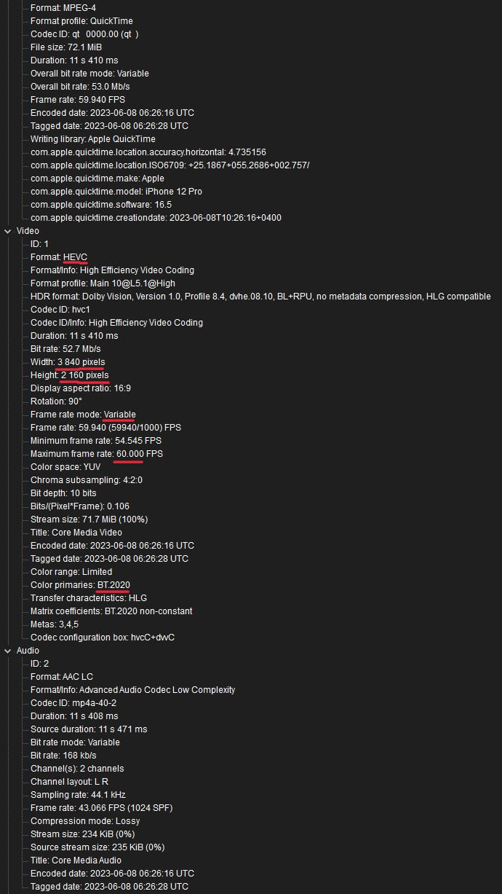
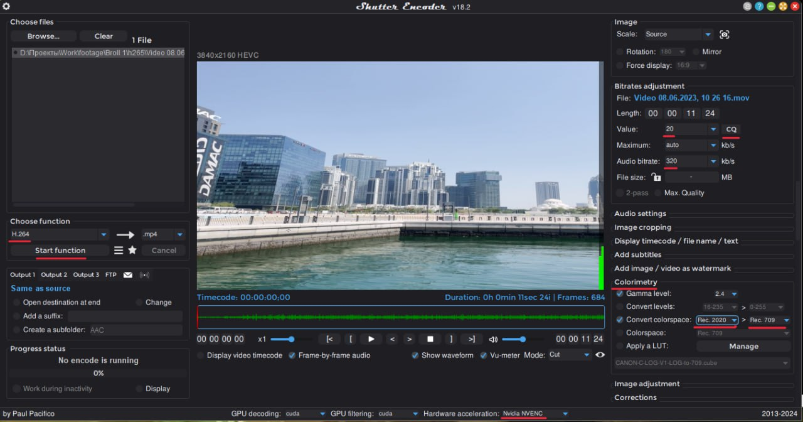
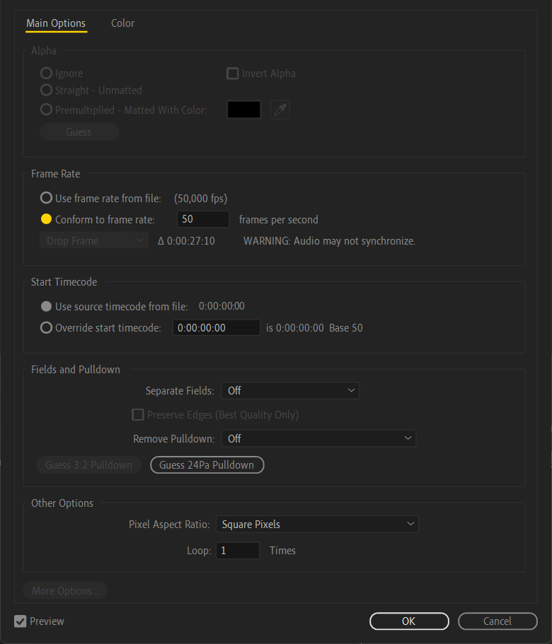
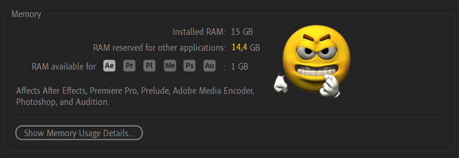
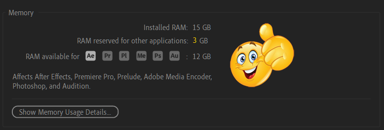
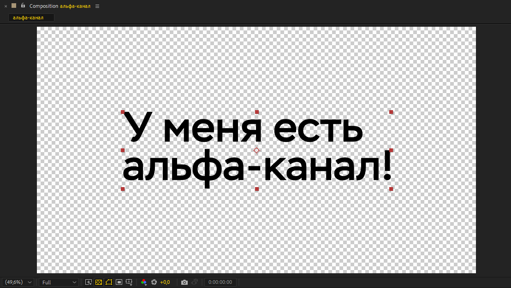

Данный раздел находится в активной разработке, поэтому некоторые пункты могут быть
пропущены или недописаны до окончательных изменений.
Полезные материалы
Где скачать шаблоны, программы для творчества, а также плагины к ним?
На
главной странице
в разделе ”Ресурсы" и в закрепленном сообщении в
AEChat
вы всегда можете найти наши каналы для шаблонов и программ. Например, в
AETemp
можно найти звуки, переходы и шаблоны с помощью хештегов:
#звуки
#переходы
#шаблоны
#плагины. А в
складе стройматериалов
вы можете найти конкретные программы или плагины для Windows, например:
#aftereffects
#magicbullet
#borisfx
или
#twixtor
Не нашёл нужный шаблон, но у меня есть на него ссылка. Как мне его получить?
Файлы из Videohive, Shutter Stock ботом не принимаются по причине того, что файлы,
находящиеся на этих сервисах, не распространяются подписочным методом.
Где взять бесплатные стоковые видео для видеороликов?
Существует множество бесплатных видео-стоков онлайн, среди которых многие
предоставляют материалы с лицензией
Creative Commons Zero (CC0), что означает возможность использования
их в своих коммерческих проектах, не указывая авторство. Перед использованием
материалов, необходимо внимательно ознакомиться с условиями использования на
каждом конкретном ресурсе. Ниже перечислены популярные источники видео:
Некоторые ресурсы могут быть заблокированы на территории РФ или других стран,
используйте
обходы
для доступа на данные ресурсы.
Где взять бесплатную статичную графику?
У нас есть канал
Design World в Telegram
с полезными материалами для графических редакторов, как Photoshop и Illustrator. В
данном канале есть навигация по каналу для нахождения всякой всячины, например:
#текстуры
#шрифты
#кисти
#паттерны
Если вам не хватает контента из
Design World, то ниже предоставлен список различных сайтов с бесплатными графическими
материалами:
Перед использованием звуков в коммерческих целях - обязательно прочтите условия
использования и лицензии, чтобы не попасть в неприятную ситуацию.
Как найти шрифт по фото?
Вы можете использовать сервисом
LikeFont
для определения шрифта по фотографии. Этот сервис способен распознавать шрифты как
на латинице, так и на кириллице. Как начать им пользоваться? Просто зайдите на
сайт и загрузите своё изображение с помощью проводника или
Ctrl + V
Главная страница LikeFont
Учтите, что по умолчанию на странице стоит галка на
I agree to post it in Identification Community, которая выкладывает
ваш скриншот на общее обозрение. Уберите галочку, если вы не хотите
выкладывать скриншот.
Предположим, что на вход мы дали определённый скриншот. Но вот незадача: он
неконтрастный и весь контент сливается. Что же делать?
Пример плохого исходника
Для этого нужно обработать изображения. Необязательно лезть в Photoshop и что-то
там делать, ведь на сайте уже есть инструменты для обработки изображения, например
Threshold. Мы его повышаем до максимально возможного значения, чтобы
текст стал более читабельным. Также есть инструменты для поворота, отзеркаливания
и наклона изображения.
Изображение после обработки средствами сайта
Затем пролистываем страницу ниже и мы видим несколько изображений к которым нужно
вписать букву.
Если на изображении нет буквы или символа, то такие ячейки можно пропустить
Чем больше вы впишете букв, тем лучше будет результат распознавания шрифта!
После того как вы вписали буквы, нажмите на Identify Now и сервис
начнёт распознавать шрифт, а затем выдаст результат.
Результат распознавания шрифта
В моём примере был использован шрифт JetBrains Mono и с его
нахождением он справился прекрасно.
Хочу влиться в After Effects, с чего мне начать?
Для изучения After Effects с нуля - рекомендуем пройти курс от
Ильи Зернова
для того чтобы разобраться в интерфейсе программы и не задавать тупые вопросы уже
в начале своего пути.
Какие есть популярные термины при использовании After Effects?
Когда новичок начинает вникать в сферу моушен-дизайна в After Effects, то он порой
может не понять о чём говорят остальные пользователи. Ниже приведён список часто
используемых слов при обсуждении After Effects:
Превью или Preview - предпросмотр или же то, что вы
видите в композиции. Иногда применяется словосочетание
зайди в превью, что означает открыть
Window > Preview для настройки проигрывания предпросмотра.
Таймлайн или Timeline - место, где отображаются ваши
слои с эффектами, ключами и длиной.
Композ или Comp - сокращение от слова "композиция".
Это своеобразная сцена с заданными параметрами, как разрешение и FPS, в котором
расположены ваши слои.
Прекомпоз или Precomp - композиция, созданная из
другой композиции с помощью выделения нужных слоёв и нажатия комбинации
Ctrl + Shift + C. Чаще всего его делают для группировки кучи
объектов, чтобы получился в итоге один слой на таймлайне. Новая композиция
появится в панели проекта и ее можно использовать в любой другой композиции.
Могрт или .mogrt - шаблон анимационного дизайна,
который можно создать в After Effects для дальнейшего использования в проектах.
Чаще всего такие шаблоны делают для Premiere Pro, но их можно использовать и в
композициях After Effects.
Прокси или Proxy - более производительная копия
исходника для монтажа за счёт использования монтажного кодека или понижения
разрешения. Его нужно делать, если ваш компьютер не переваривает большое
разрешение исходников или вы используете не монтажный кодек. Обычно такие прокси
создаются с помощью программ Media Encoder, Shutter Encoder или Handbrake.
Инфлюкс или Influx - сторонний плагин от Autokroma,
позволяющий импортировать в After Effects неподдерживаемые типы файлов, например
.mkv и .flv
Компсеттер - сторонний
JSX-скрипт
для изменения параметров нескольких композиций, например FPS или разрешение.
Семплы или Sample - часто применяется в 3D-плагинах
или в настройке Motion Blur. Чем больше семплов, тем лучше картинка.
Нуль - пустой объект, с помощью которого можно привязывать объекты
и манипулировать с ними.
Солнышко
или
звёздочка
- пункт Continuously Rasterize для уменьшения "пикселей" у
векторных объектов.
Dynamic Link - функция для соединения композиций из After Effects в
Premiere Pro или Media Encoder.
Кеинг - удаление однородного фона из видео. Часто применяется в
контексте удаления зелёного или синего фона.
Трансформ - настройка или анимация базовых свойств слоя, например
положение или размер
Элемент - зачастую под этим подразумевается сторонний плагин
Element 3D
от VideoCopilot. Он позволяет добавлять 3D-объекты в композицию After Effects.
Шейп - фигура. Коротко и понятно.
Перекодируй через шаттер
- призыв к конвертации исходников через программу
Shutter Encoder, которая является оболочкой для FFmpeg
Перелинкуй исходники
- переподключение потерявшихся исходников в окне Project. Для этого надо нажать
ПКМ по исходнику с ошибкой и выбрать в меню "Replace Footage".
Редьюс или Reduce Project - функция After Effects,
которая удаляет неиспользованные файлы в вашем проекте. Данный пункт находится в
File > Dependencies > Reduce Project
Улитка,
спираль
или
лассо
- способ соединения параметров одного слоя к другому. Находится в столбце
Parent & Link на таймлайне.
Морфинг - плавное превращение одной фигуры в другую. Часто
применяется с шейповыми слоями.
Стесняшка, шляпка,
медуза
- речь об переключателе Shy, который позволяет временно скрыть слой на
таймлайне.
Плагин - подключаемые эффекты формата .aex, часто
применяется с выражением
где скачать?
Экстеншон - расширения, часто запакованы в
.zxp
Рендер - генерация и упаковка кадров композиции в выбранный
пользователем тип файла.
Пресет - заготовки эффектов в .ffx или заготовки
параметров для рендера
Ромбики
или
ключи
- ключевые кадры или же метки, на основе которых создаётся анимация. Они
указывают на то, как будет выглядеть анимированный элемент в конкретный момент
времени.
Усики - контроллеры скорости в Graph Editor или пути движения в
превью.
Коллект файл - сборка всех файлов в проекте для передачи другому
человеку. Делается через
File > Dependencies > Collect Files
Аджастмент
- корректирующий слой, данное выражение идёт от английской локализации, где
такой слой называется Adjustment Layer.
Солид - слой с однотонным цветом. Часто применяется как фон или как
инициализатор 3D-эффекта, например Trapcode Particular.
Ротобраш - инструмент для выделения объекта в кадре. Часто
используется для создания обводки у объекта или удаления фона.
Ротоскоп - процесс разделения кадра на несколько слоёв или планов.
Автотрейс - автоматическое создание маски или фигуры на основе
краёв вашего слоя, находится в
Layer > Auto-trace
Моушен блюр
или
Motion Blur
- размытие в движении, позволяет дать плавное движение объекта.
Плейхед - вертикальная временная метка, которая показывает текущий
кадр в предпросмотре.
Кубик - индикация, является ли слой или эффект трёхмерным.
Раскрой слой - открыть все параметры у слоя, иногда применяется для
того, чтобы пользователь нажал на определённые
Патч маски
или
патч шейпа - своеобразная линия или кривая, которая создана для
маски или фигурного слоя. Они взаимозаменяемые, поэтому вы можете превратить
маску в фигуру и наоборот путём копирования ключей.
Тайлинг
- зеркальная плитка, которая появляется при использовании эффектов по типу CC
Repetile или Motion Tile.
Ракета
- окно Project Settings, в котором можно изменить настройки рендера или цветовых
профилей.
Борисовский
или
сапфировский
или
континуумовский
- чаще всего подразумеваются плагины от компании BorisFX, в частности Boris FX
Sapphire или Boris FX Continuum. Может употребляться вместе с названием эффекта,
например сапфировский шейк или борисовский силуэт, что означает эффект S_Shake и
программа BorisFX Silhouette соответственно.
Максоновский
или
редгиантовский
- чаще всего подразумеваются плагины от Maxon и Red Giant, например Trapcode
Particular или VFX Suite.
Топаз - часто используется для обозначения сторонних программ от
Topaz, например Video AI, Photo AI или Gigapixel AI.
Тречить
или
трекинг - определение местоположения движущегося объекта во времени
с помощью камеры. Часто применяется, если нужно прицепить композицию и
какому-нибудь объекту в кадре.
Мокка
или
моча
- плагин BorisFX Mocha AE или Pro, которая используется для трекинга объектов. К
слову, употребление слова "моча" в данном контексте неправильное.
Хоткей - горячие клавиши или же комбинация клавиш, которые должен
нажать пользователь для выполнения желаемого действия.
Какие есть часто используемые у пользователей горячие клавиши для работы с After
Effects?
Горячие клавиши могут помочь ускорить ваш процесс работы путём сокращения времени
на нахождение пункта мышкой.
Здесь приведены комбинации клавиш для Windows, на macOS всё аналогично:
Ctrl равен Command, а Alt равен
Option
Ctrl + Alt + Num /: очистка кэша оперативной памяти
Ctrl + Shift + H: отображение границ и выделения слоёв,
контроллеров и путей движения в композиции или же. более эффективен с включенным
Toggle Mask and Shape Path Visibility.
Ctrl + Shift + C: создать прекомпозицию, работает при выделении
нужных слоёв
+ и -: увеличение или уменьшение масштаба таймлайна
, и .: увеличение или уменьшение масштаба
предпросмотра
B и N: установка начала и конца рабочей области
Ctrl + Shift + X: обрезка композиции до начала и конца рабочей
области
Ctrl + Shift + Y: установка параметров (размер, цвет, угол обзора,
интенсивность и т.д.) у камеры, источника цвета, Adjustment и Solid Layer.
Одиночное нажатие U: раскрыть все параметры слоя, у которых есть
ключи
Двойное нажатие U: раскрыть все применённые эффекты слоя и
параметры, у которых есть ключи
Одиночное нажатие E: раскрыть добавленные эффекты у слоя
Двойное нажатие E: показать параметры у которых есть выражения
V: инструмент выделения, стандартный инструмент на все случаи жизни
H или зажатие Space: инструмент руки, позволяет
перемещать мышкой таймлайн и предпросмотр
A: раскрытие положения якорной у слоя
Y: инструмент для выбора положения якорной точки
G: инструмент пера, позволяет рисовать фигуру или маску
Ctrl + Alt + Home: установка якорной точки в центр слоя
Если вы задаётесь вопросом, а стоит ли переходить с одной версии на другую: всё
зависит от вас и ваших предпочтений. Желательно обновлять периодически программы,
а также сторонние плагины, чтобы исключить особые баги и приколы древних версий.
Мы не советуем устанавливать очень старые версии программ от Adobe, если у вас
относительно свежий компьютер.
Если вы всё-таки решились обновить программу из одного года в другой, но не знаете
как это сделать без потери плагинов, то для этого вы можете скопировать старую
папку
After Effects 20XX
в
C:\Program Files\Adobe
и переименовать в ту версию, которую вы хотите установить. После этого вы можете
открыть установщик новой версии и выполнить установку поверх скопированной папки.
При возникновении проблем после процедуры с копией папки рекомендуется провести
чистую установку. Очистить компьютер от прошлых установленных версий можно через
Adobe Creative Cloud Cleaner.
Какие эффекты можно использовать в Lottie?
Изначально Lottie не поддерживает все функции After Effects для вывода, поэтому на
сайте Lottiefiles есть
таблица совместимости
вашей анимации с браузерами и платформами.
Чтобы проверить вашу анимацию на корректную работоспособность, загрузите её в
предпросмотр от Lottie.
Вопросы от новичков
Какой правильный пайплайн для использования чужих исходников в проекте?
Прежде чем начать работать в программе, расположите ваши исходники в отдельный
диск или папку, а не на рабочем столе или в системных файлах. Структурирование -
основа дальнейшей работы.
Затем узнайте о ваших исходниках - в каком кодеке, цветовом пространстве или FPS.
Для этого на вашем ПК должна быть установлена программа
MediaInfo. После его установки в контекстном меню проводника появится пункт для открытия
файла в этой программе. Желательно для лучшего отображения информации использовать
вид Tree. Оттуда нам нужно узнать пять главных параметров: разрешение, переменный
или постоянный FPS, кодек и цветовое пространство.

Пример исходника, открытого через MediaInfo
Если у вас видео с постоянным FPS, цветовое пространство является
Rec.709, а исходники были записаны на адекватную камеру, то радуемся
жизни и спокойно импортируем в композицию и работаем с ними.
Если у вас видео с переменным (Variable) FPS, цветовое пространство является
Rec.2020, а исходники были записаны на iPhone, то это полный п%@#!ц.
Почему? Потому что их нужно привести в порядок и для этого нам поможет сторонняя
программа
Shutter Encoder.
После установки программы, нужно его запустить и закинуть ваши исходники, можно
даже целую папку.

Окно Shutter Encoder с настройками для конвертации цветового профиля
При первом запуске Shutter Encoder вам может показаться, что интерфейс слишком
сложен, но это не совсем так. Как правило, пользователю нужно выполнить семь
действий:
Выбрать кодек, который нам нужен. Чаще всего используют Prores 422, DNxHR или
H.264.
Выбрать режим кодирования - с помощью фиксированного битрейта или квантирования
(CQ). Для этого достаточно нажать два раза на кнопку VBR в правой части
программы.
Установить значение CQ, если вы всё-таки выбрали квантирование в качестве режима
кодирования. Как правило, значение 20 или 23 будет достаточно, чтобы сохранить
качество, при этом получить адекватный вес. Чем ниже значение CQ, тем лучше
качество видео, но больше вес.
Установить битрейт для аудио, достаточно установить значение 320 Кбит/с.
Изменить цветовое пространство. Для этого нужно перейти во вкладку
Colorimetry или Преобразовать цветовое пространство и
установить галочку на Convert Colorspace или
Конвертировать. Затем установите первым значением ваш цветовой
профиль, который указан в MediaInfo (для iPhone это обычно Rec.2020). Вторым
значением установите Rec.709.
Если у вас видеокарта от Nvidia, то установите галочку на Hardware Acceleration
и укажите там
Nvidia NVENC
Нажать кнопку Start Function
Если вы не указывали папку для выходных файлов, то файлы сохранятся в папку, где
уже были исходники. После сохранения исходников вы можете их импортировать в After
Effects и начать работу.
Почему у меня, б%@#ь, лагает After Effects и в чём же причина?
Никто не может назвать конкретную причину этого явления, ведь всё упирается в то,
что вы делаете в вашем проекте: делаете не оптимизированные ”эдиты", собираете
простую композицию или пытаетесь монтировать часовое видео в программе, которая
изначально для этого не презначалась.
Для начала проверьте ваш компьютер на соответствие
системным требованиям
программы, ведь для адекватной работы - необходимо как минимум 16 ГБ ОЗУ и
процессор от Intel минимум 8-го поколения или AMD Ryzen минимум 1000 серии. Но
несмотря на это, можно запустить программу и на более слабом железе, главное
соблюдать минимальные требования.
Предположим, что ваша рабочая станция прекрасно соответствует системным
требованиям, но вы не учли тот факт, что вы используете сторонние плагины. А
зачастую именно сторонние плагины и есть проблема ваших ”лагов". Старайтесь не
устанавливать в программу всевозможные плагины из разных источников и не мешать в
проекте сторонние эффекты с одинаковой сутью, но от разных брендов, например
BCC Camera Shake
и
uni.shake, ведь они могут тормозить из-за разных принципов просчёта
кадра.
Для того чтобы выяснить, сколько времени занимает просчёт кадра из-за эффекта,
разработчики внедрили в After Effects функцию
Render Time
На Solid были применены эффекты от Boris FX Sapphire, которые могут значительно
отнимать ваше время для рендера
Есть ещё отдельная категория проблем пользователей связанная с оптимизацией и
гигиеной проекта, касающаяся исходников видео, фото и аудио.
Если вы используете любое видео .mp4 с интернета или различных видео хостингов -
то переконвертируйте их в
Apple ProRes 422
или
DNxHR
через Media Encoder или
Shutter Encoder, так как такие видео зачастую конвертируются неизвестно во что и могут плохо
крутиться программой. Более подробную информацию про область применения различных
кодеков вы можете посмотреть в видео от
VideoSmile.
Если у вас используются видео-исходники с переменным FPS, то такие видео также
надо переконвертировать через вышеназванные утилиты в постоянный FPS. Этот совет
касается и видео с переменным битрейтом.
Все аудио, использующиеся в проекте, стоит перевести в
.wav, ведь оно может проигрываться рывками, замедленно или с другими
звуковыми багами.
В редких случаях проблемы с производительностью можно испытывать из-за кривого
шрифта, скачанного из интернета. Попробуйте его переконвертировать в
.ttf или скачать с другого источника.
Иногда важную роль в производительности играет накопитель, на котором лежат
исходники. Если вы с M.2 SSD ничего не почувствуете, то при использовании
тяжеловесных исходников с HDD, особенно медленных, могут начаться проблемы. Если у
вас есть SSD с большим объёмом памяти - следует перенести весь проект туда и
продолжить работу.
Как заставить After Effects использовать всю мощность процессора и видеокарты?
Вы можете задействовать весь потенциал вашего процессора, включив функцию
Multi-Frame Rendering
в настройках программы. Эта функция позволит рендерить несколько кадров
одновременно, используя всю вычислительную мощь процессора.
В настройках можно ограничить использование процессора при Multi-Frame рендере для
того, чтобы дать другим программам возможность использования процессора.
Данная опция находится в Edit > Preferences > Memory & Perfomance
Пожалуйста - не путайте значения и внимательно читайте пункт настройки: 25% в
настройке означает тот факт, что 75% вашего процессора будет уделено для After
Effects при использовании Multi-Frame рендера. Если вы установите в этой настройке
90%, то After Effects будет использовать всего лишь 10% мощностей процессора и
такая функция становится просто бессмысленной.
Поговорим и про видеокарту: After Effects до сих пор не умеет полностью
использовать графический процессор (GPU), даже если сторонние эффекты поддерживают
его - программа не обязана в полной мере задействовать видеокарту. Основное
воздействие на видео и эффекты происходит с акцентом на процессор (CPU), особенно
при использовании множества различных плагинов от разных разработчиков, что может
снизить эффективность GPU-рендера.
Вы ещё спросите: а почему в Premiere Pro видеокарта спокойно задействуется, а в
After Effects через одно место? Ответ прост: Premiere Pro и After Effects -
программы для совершенно разных задач, соответственно там используются разные
подходы ко всем действиям!
Для чего некоторые пользователи ставят рендер на процессор и как это сделать?
Использование рендера на процессоре уменьшает количество возможных артефактов и
приколов после рендера вашего проекта, нежели при использовании псевдо-ускорения
на GPU. При рендере на процессоре ваше время рендера может незначительно
измениться в худшую сторону, но зачастую - остается плюс-минус таким же, иногда
рендер на процессоре происходит заметно быстрее, нежели с включенным
GPU-ускорением.
Для включения рендера на процессоре - перейдите в
File > Project Manager
или нажмите комбинацию клавиш
Ctrl + Alt + Shift + K
и во вкладке Video Rendering and Effects вы можете выбрать на чём рендерить ваш
проект.
Окно Project Manager с выбором типа рендеринга
Пункт
Mercury Software Only
позволяет программе рендерить проект преимущественно через процессор, но сторонние
эффекты, принудительно использующие GPU (например Depth Scanner), всё также будут
считаться через видеокарту.
Пункт
Mercury GPU Acceleration (CUDA / OpenCL)
позволяет After Effects использовать видеокарту, но программа не будет
гарантировано считать все эффекты через неё и возможны проблемы при использовании
в долгосрочной перспективе.
Как улучшить качество исходников?
Если вы пришли с TikTok или YouTube от ”мамкиных эдиторов", которые бездумно
крутят
Unsharpen Mask
и
Sharpen
на плохом исходнике - то отказывайтесь от такой вредной привычки, ведь оно только
губит ваше видео, если вы не делаете это намеренно.
В качестве эффективного способа хоть как-то улучшить качество исходного материала
могу посоветовать использовать нейросети для этого, например
Topaz Video
или
Topaz Photo
Если вы не хотите использовать Standalone программы, то вы можете воспользоваться
сторонними плагинами, например BorisFX Continuum, в который добавили эффект
UpRes ML
Чем можно плавно замедлить видео?
Существуют различные способы для плавного замедления видео. Одним из популярных
сторонних плагинов для замедления композиций в After Effects является довольно
старый, но уже зарекомендовавший себя
Twixtor. Он снова стал популярен за счёт "мамкиных эдиторов из тиктока" и "анимешников",
которые замедляют каждое второе видео и кайфуют с этого.
На данный момент эффективным средством для плавного замедления видео можно назвать
относительно новый эффект
Retime ML из пакета
BorisFX Continuum.
Ещё одним сторонним способом для замедления видео является
Topaz Video AI
с различными моделями для замедления. Также эта программа помогает улучшить
качество ваших исходников за счёт увеличения разрешения с помощью искусственного
интеллекта.
Действия на видео могут отличаться из-за версии программ и плагинов, но суть
использования остаётся таким же.
Все эти плагины и программы вы всегда можете найти в
складе стройматериалов
по хештегам #twixtor, #continuum и
#topaz
Если вы не хотите устанавливать сторонние плагины, то вы можете плавно замедлить
видео стандартными способами After Effects. Для этого импортируйте видео,
замедлите его с помощью
ПКМ по слою > Time > Time Stretch, указав нужный фактор
замедления или с помощью растягивания слоя с зажатым Alt. Затем снова
нажмите ПКМ по слою > Frame Blending и выберите
Frame Mix или Pixel Motion
Чем можно убрать шумы на видео?
Подавить шум можно разными способами, всё зависит от вашего исходника. Помните,
что подавление шума - ресурсоёмкое действие для вашего ПК и лучше обработанное
видео сохранить отдельно и использовать его в дальнейшем монтаже с помощью замены
исходников.
Одним из эффективных шумодавов является
Neat Video, который часто применяется в профессиональной сфере. Также этот плагин может
убирать мерцания и царапины у старых видео.
Из сторонних альтернатив могу привести
Magic Bullet Denoiser III из пакета Red Giant Magic Bullet Suite,
BCC+Denoise ML из BorisFX Continuum и DE:Noise от
Re:Vision Effects.
Ещё шумы можно убрать с помощью стандартного эффекта
Remove Grain. Он может работать не так эффективно, как сторонние
решения, но его точно можно использовать в своих проектах.
Чем можно убрать зелёный или синий фон?
Существует множество способов убрать определенный цвет, особенно если речь
касается об зелёном или синем фоне. Каждый способ, о котором будут написаны ниже,
могут по-разному работать на ваших исходниках, поэтому не стесняйтесь перебирать
эффекты для получения более качественного результата.
С помощью стандартных средств для удаления однородного фона в After Effects
пользователи часто выбирают несколько эффектов из списка:
Selective Color - для отделения зелёного или синего цвета от цвета
объекта
Keylight 1.2 - для удаления цветного фона
Key Cleaner и Simple Choker - для смягчения краёв
после удаления фона
Advanced Spill Suppressor - для обесцвечивания цветного контура,
вызванный отражением света от фона
Некоторые пользователи прибегают к использованию более простых инструментов для
удаления фона, например
Linear Color Key, если результат не сильно важен в угоду
производительности сцены.
Из сторонних эффективных инструментов для удаления цветного фона могу назвать
Primatte Keyer 6, находящийся в пакете
Red Giant VFX Suite. Более подробную инструкцию о том, как с ним
работать вы можете найти на официальном YouTube-канале
Maxon Red Giant
У BorisFX также есть несколько инструментов для удаления цветного фона, например
BCC Color Key, BCC Chroma Key Studio, а также
Primatte Studio
Как убрать чёрный или белый цвет на видео?
Черный и белый цвет можно убрать стандартным эффектом
Extract, который позволяет вырезать цвет из видео по яркостной маске,
а также по цвету и прозрачности.
Если результат от применения Extract вам не понравился, то вы можете
воспользоваться сторонним эффектом uni.unmult, находящийся в пакете
Red Giant Universe.
Иногда бывает достаточно применить режим наложения Overlay, чтобы
убрать ненужные цвета. Учтите, что режимы наложения не работают, если под
выбранным слоем ничего не находится.
Для чего с каждого угла советуют ставить английский язык в After Effects и как это
сделать?
Использование английской версии программы исключает 95% проблем, на которые вы
повлиять не можете. Особенно это касается использования сторонних плагинов,
шаблонов и выражений.
Какие проблемы бывают при использовании русской версии программы:
Сторонние плагины могут сбоить из-за проблем, связанные с кодировкой,
соответственно падает стабильность программы в целом.
При использовании шаблонов или чужих проектов вы с шансом 98% встретитесь с
ошибкой
Этот проект содержит ошибки выражений
из-за того, что выражения берут значения слоев на локализации, которым
пользовался автор проекта. Частично это решается
сторонним плагином, но лучше сразу переключить на английский язык чтобы не забивать себе мозг.
Для быстрой смены языка After Effects на английский язык достаточно создать пустой
текстовый документ с названием
ae_force_english.txt
и поместить в папку "Документы" вашего пользователя.
Также вы можете воспользоваться командой для терминала Windows, чтобы создать
текстовый документ, если вам лень создавать пустой файл вручную в проводнике.
Если это не помогло - переименуйте файл
after_effects_ru_RU.dat, находящийся на пути
C:\Program Files\Adobe\Adobe After Effects 20XX\Support Files\Dictionaries\ru_ru
на
after_effects_en_US.dat
Учтите, что при смене языка After Effects может сбросить ваши настройки!
Я принципиально установил After Effects на русском языке, но не знаю, как звучат
эффекты на английском языке
А зря, ведь могли бы и сменить язык. В раскрывающемся списке расположен список
перевода эффектов.
Перевод и наличие эффектов может отличаться в зависимости от версии программы
Перевод стандартных эффектов с русского языка на английский
Эффект на русском
Эффект на английском
Описание эффекта на YouTube
Эффекты для работы с 3D-каналами (3D Channel Effects)
Извлечение 3D-канала
3D Channel Extract
Криптоматт
Cryptomatte
Подложка глубины
Depth Matte
Глубина поля
Depth of Field
Извлечение
Extractor
3D-туман
Fog 3D
Идентификатор подложки
ID Matte
IDentifier
IDentifier
Эффекты для работы с аудио (Audio)
Назад
Backwards
ВЧ и НЧ
Bass & Treble
Задержка
Delay
Фланджер и хор
Flange & Chorus
Фильтр НЧ и ВЧ
High-Low Pass
Модулятор
Modulator
Параметрический эквалайзер
Parametric EQ
Реверберация
Reverb
Стереомикшер
Stereo Mixer
Тон
Tone
Эффекты для размытия и резкости (Blur & Sharpen)
Двухстороннее размытие
Bilateral Blur
Размытие при малой глубине резкости камеры
Camera Lens Blur
Восстановление резкости при дрожании камеры
Camera-Shake Deblur
CC Перекрестное размытие
CC Cross Blur
CC Радиальное размытие
CC Radial Blur
CC Быстрое радиальное размытие
CC Radial Fast Blur
CC Векторное размытие
CC Vector Blur
Размытие каналов
Channel Blur
Сложное размытие
Compound Blur
Направл. разм.
Directonal Blur
Быстрое размытие по рамке
Fast Box Blur
Размытие по Гауссу
Gaussian Blur
Радиальное размытие
Radial Blur
Увеличить резкость
Sharpen
Умное размытие
Smart Blur
Контурная резкость
Unsharp Mask
Эффекты для работы с цветовыми каналами (Channel)
Арифметический
Arithmetic
Смешение
Blend
Вычисления
Calculations
CC Композит
CC Composite
Инструмент комбинирования каналов
Channel Combiner
Сложный арифметический
Compound Arithmetic
Инверсия
Invert
Минимакс
Minimax
Удалить обработку краев цветом
Remove Color Matting
Задать каналы
Set Channels
Настроить подложку
Set Matte
Сдвинуть каналы
Shift Channels
Сплошной составной
Solid Composite
Эффекты для коррекции цвета (Color Correction)
Автоматическая коррекция цвета
Auto Color
Автоконтраст
Auto Contrast
Автоматические уровни
Auto Levels
Черное и белое
Black & White
Яркость и контрастность
Brightness & Contrast
Цвета телетрансляции
Broadcast Colors
CC Нейтрализатор цвета
CC Color Neutralizer
CC Смещение цвета
CC Color Offset
Ядро CC
СС Kernel
CC Тонер
CC Toner
Изменить цвет
Change Color
Заменить на цвет
Change to Color
Микширование каналов
Channel Mixer
Цветовой баланс
Color Balance
Цветовой баланс (HLS)
Color Balance (HLS)
Привязка цвета
Color Link
Стабилизатор цвета
Color Stabilizer
-
Colorama
Кривые
Curves
Выровнять
Equalize
Экспозиция
Exposure
Гамма/Основа/Усиление
Gamma/Pedestal/Gain
Цветовой тон/Насыщенность
Hue/Saturation
Оставить цвет
Leave Color
Уровни
Levels
Уровни (отдельные элементы управления)
Levels (Individual Controls)
Цвет Lumetri
Lumetri Color
Фотофильтр
Photo Filter
Произвольная карта PS
PS Arbitrary Map
Выборочный цвет
Selective Color
Тень/Светлые тона
Shadow/Highlight
Оттенок
Tint
Трехкрасочный
Tritone
Красочность
Vibrance
Ограничитель видео
Video Limiter
Эффекты для искажения (Distort)
Деформация по Безье
Bezier Warp
Выпуклость
Bulge
Изгиб CC
CC Bend It
-
CC Bender
-
CC Blobbylize
Потоковое движение CC
CC Flo Motion
-
CC Griddler
CC Объектив
CC Lens
Переворот страницы CC
CC Page Turn
Множественная привязка CC
CC Power Pin
Волновая пульсация CC
CC Ripple Pulse
-
CC Slant
CC Мазок
CC Smear
CC Сплит
CC Split
CC Разбиение 2
CC Split 2
-
CC Tiler
Привязка по углам
Corner Pin
Увеличение с сохранением уровня детализации
Detail-preserving Upscale
Карта смещения
Displacement Map
Пластика
Liquify
Увеличение
Magnify
Деформация сетки
Mesh Warp
Зеркало
Mirror
Смещение
Offset
Компенсация оптики
Optics Compensation
Полярные координаты
Polar Coordinates
Изменить форму
Reshape
Рябь
Ripple
Устранение эффекта плавающего затвора
Rolling Shutter Repair
Пятно
Smear
Сферизация
Spherize
Преобразовать
Transform
Вихревое смещение
Turbulent Displace
Скручивание
Twirl
Деформация
Warp
Стабилизатор деформации
Warp Stabilizer
Волнообразная деформация
Wave Warp
Эффекты для контроля выражений (Expression Controls)
Элемент управления 3D-точками
3D Point Control
Элемент управления углами
Angle Control
Элемент управления "Флажок"
Checkbox Control
Элемент управления цветом
Color Control
Элемент управления "Раскрывающееся меню"
Dropdown Menu Control
Элемент управления "Слой"
Layer Control
Элемент управления "Точка"
Point Control
Элемент управления "Ползунок"
Slider Control
Генераторы изображения (Generate)
4-цветный градиент
4-Color Gradient
Расширенное освещение
Advanced Lightning
Спектр аудио
Audio Spectrum
Форма звуковой волны
Audio Waveform
Луч
Beam
Клеевой пистолет CC
CC Glue Gun
Выброс света 2.5 CC
CC Light Burst 2.5
Световые лучи CC
CC Light Rays
Поворот цвета CC
CC Light Sweep
CC Нити
CC Threads
Мозаичная текстура
Cell Pattern
Шахматная доска
Checkerboard
Круг
Circle
Эллипс
Ellipse
Заливка пипеткой
Eyedropper Fill
Заливка
Fill
Фрактал
Fractal
Цветовая шкала градиента
Gradient Ramp
Сетка
Grid
Блики
Lens Flare
Заливка (опять)
Paint Bucket
Радиоволны
Radio Waves
Каракули
Scribble
Обводка
Stroke
-
Vegas
Надпись
Write-on
Эффекты для VR-видео (Immersive Video)
Размытие VR
VR Blur
Хроматические аберрации VR
VR Chromatic Abberations
Градиенты цвета VR
VR Color Gradients
Конвертер VR
VR Converter
Понижение шума VR
VR De-Noise
Цифровое искажение VR
VR Digital Glitch
Фрактальный шум VR
VR Fractal Noise
Свечение VR
VR Glow
Плоскость в сферу VR
VR Plane to Sphere
Повернуть сферу VR
VR Rotate Sphere
Увеличить резкость VR
VR Sharpen
Сфера в плоскость VR
VR Sphere to Plane
Эффекты для кеинга (Keying)
Расширенное подавление рассеяния
Advanced Spill Suppressor
Простое удаление каркаса CC
CC Simple Wire Removal
Ключ разности цвета
Color Difference Key
Цветовой диапазон
Color Range
Подложка разницы
Difference Matte
Извлечение
Extract
Внутренний/внешний ключ
Inner/Outer Key
Ключевая очистка
Key Cleaner
-
Keylight (1.2)
Линейный цветовой ключ
Linear Color Key
Эффекты для изменения подложек (Matte)
Подавление подложки
Matte Choker
Форма Mocha
Mocha shape
Уточнить жесткую подложку
Refine Hard Matte
Уточнить мягкую подложку
Refine Sorm Matte
Упрощенное подавление
Simple Choker
Эффекты для генерации шума и зерна (Noise & Grain)
Добавить зернистость
Add Grain
Пыль и царапины
Dust & Scratches
Фрактальный шум
Fractal Noise
Соответствие зернистости
Match Grain
Медиана
Median
Median (предыдущая версия)
Median (Legacy)
Шум
Noise
Альфа-канал шума
Noise Alpha
Шум HLS
Noise HLS
Автошум HLS
Noise HLS Auto
Удалить зернистость
Remove Grain
Турбулентный шум
Turbulent Noise
Устаревшие эффекты (Obsolete или Legacy)
Базовый 3D
Basic 3D
Основной текст
Basic Text
Цветовой ключ
Color Key
Размытие по Гауссу (из прежней версии)
Gaussian Blur (Legacy)
Молния
Lightning
Текст по контуру
Path Text
Уменьшить мерцание в чересстрочной развертке
Reduce Interlace Flicker
Подавление разлития
Spill Suppressor
Эффекты для перспективы (Perspective)
Функция 3D Camera Tracker
3D Camera Tracker
3D-очки
3D Glasses
Скос альфа-канала
Bevel Alpha
Скошенные края
Bevel Edges
CC Цилиндр
CC Cylinder
CC Окружающая среда
CC Environment
CC Сфера
CC Sphere
CC Прожектор
CC Spotlight
Тень
Drop Shadow
Радиальная тень
Radial Shadow
Эффекты для имитации чего-либо (Simulation)
Танец карт
Card Dance
Каустические кривые
Caustics
Действие шара CC
CC Ball Action
CC Пузыри
CC Bubbles
-
CC Drizzle
CC Волосы
CC Hair
Эффект Mr. Mercury CC
CC Mr. Mercury
Системы частиц CC II
CC Particle Systems II
CC Particle World
CC Particle World
Эффект пикселов Полли CC
CC Pixel Polly
CC Осадки
CC Rainfall
CC Рассеяние
CC Scatterize
CC Снегопад
CC Snowfall
Эффект звездной вспышки
CC Star Burst
Пена
Foam
Площадка для частиц
Particle Playground
Разброс
Shatter
Мир волн
Wave World
Эффекты для стилизации (Stylize)
Мазки кисти
Brush Strokes
Мультипликация
Cartoon
Загрузка блока CC
CC Block Load
CC Burn Film
CC Burn Film
CC Стекло
CC Glass
-
CC HexTile
-
CC Kaleida
Эффект Mr. Smotthie CC
CC Mr. Shoothie
CC Пластик
CC Plastic
-
CC RepeTile
Порог CC
CC Threshold
Эффект порогового значения RGB CC
CC Threshold RGB
CC Виньетка
CC Vignette
Цветовое тиснение
Color Emboss
Тиснение
Emboss
Выделение краев
Find Edges
Свечение
Glow
Мозаика
Mosaic
Мозаика движения
Motion Tile
Постеризация
Posterize
Шероховатые края
Roughen Edges
Рассеивание
Scatter
Проблесковый цвет
Strobe Light
Текстуризация
Texturize
Пороговое значение
Threshold
Эффекты для генерации текста (Text)
Нумерация
Numbers
Тайм-код
Timecode
Эффекты для манипуляции временем (Time)
Эффект СС «Принудительное размытие в движении»
CC Force Motion Blur
Эффект CC Wide Time
CC Wide Time
Эхо
Echo
Размытие пикселей в движении
Pixel Motion Blur
Время постеризации
Posterize Time
Разница во времени
Time Difference
Смещение по времени
Time Displacement
Искажение времени
Timewarp
Эффекты для создания переходов (Transition)
Растворение блоков
Block Dissolve
Вытеснение карты
Card Wipe
Эффект витражного вытеснения CC
CC Glass Wipe
Эффект вытеснения сетки CC
CC Grid Wipe
Эффект вытеснения изображения CC
CC Image Wipe
-
CC Jaws
Эффект Light Wipe CC
CC Light Wipe
-
CC Line Sweep
-
CC Radial ScaleWipe
-
CC Scale Wipe
-
CC Twister
-
CC WarpoMatic
Градиентное вытеснение
Gradient Wipe
Вытеснение диафрагмы
Iris Wipe
Линейное стирание
Linear Wipe
Радиальное вытеснение
Radial Wipe
Жалюзи
Venetian Blinds
Технические эффекты (Utility)
Применить цвета LUT
Apply Color LUT
-
CC Overbrights
Конвертер Cineon
Cineon Converter
Конвертер профиля цвета
Color Profile Converter
Нарастить границы
Grow Bounds
Расширитель HDR
HDR Compander
Сжатие подсветки HDR
HDR Highlight Compression
Как передать проект другому человеку со всеми исходниками?
Вы можете воспользоваться функцией Collect Files, позволяющая
сохранить .aep файл вместе с всеми исходниками в одну папку, которую вы можете
заархивировать с помощью
WinRAR
для Windows,
keka
для macOS или открыть общий доступ с помощью облачных хранилищ.
Для этого нужно перейти в
File > Dependencies > Collect Files и после указать место для
сохранения.
Если вы не сохраняли проект, программа предложит вам его сохранить. В открывшемся
окне появятся настройки: что собирать из исходников, убирать ли неиспользуемые
исходники и так далее.
Прежде чем сохранять, не забудьте выставить For All Comps в пункте
Collect Source Files
Я принципиально установил After Effects не на стандартное расположение и наткнулся
на неработоспособность сторонних плагинов
А зря, могли бы установить изначально программу нормально, не меняя расположения
установки.
Но если вы всё-таки хотите перенести программу на другой диск, то для этого в
Windows есть функция символьных ссылок, или же
Symlink
. Подробнее о переносе программы с одного диска на другой - смотрите в видео ниже.
Учтите, что After Effects должен сначала быть установлен в стандартном
местоположении, чтобы его перенести
Данные действия вы проделываете на свой страх и риск и никто не гарантирует
корректную работу программ при использовании символьных ссылок
Предпросмотр идёт как будто в slow motion, что делать?
Для начала проверьте настройки вашего окна Preview и убедитесь, что параметр FPS
установлен на Auto и что две опции кэширования
Cache before playback
и
If caching, play caching frames
активированы. Это позволит воспроизводить предпросмотр из кэша, минуя рендер в
реальном времени, и при необходимости сохранять данные на диск или оперативную
память, в зависимости от текущего состояния кэша.
Окно Preview для демонстрации настроек для предпросмотра
Если у вас имеется достаточный объем оперативной памяти или возникают проблемы с
записью кэша на диск, вы можете выключить опцию кэширования в
Edit > Preferences > Media & Disk Cache
Пункт Disk Cache отвечает за кэширование вашего проекта на диск
Иногда возникают ситуации, когда при использовании беспроводных наушников или
неправильного аудио выхода программа пытается синхронизировать изображение и звук,
но получается всё через одно место. В таких случаях рекомендуется либо обновить
аудио драйверы, либо изменить аудио выход на другой и уменьшить задержку (Latency)
в
Edit > Preferences > Audio Hardware
Настройка уменьшения задержки звука. По умолчанию установлено значение 200
Почему это так происходит? Если вы пытаетесь воспроизвести предпросмотр
композиции, предварительно не кэшируя, то ваш ПК попытается просчитать каждый кадр
на лету. Иногда это удаётся и без тормозов, если проект несложный, но чаще всего
при сложных сценах After Effects просто не успевает просчитать кадр до тех пор,
пока он не появится на экране. В окне
Info
вы всегда можете посмотреть информацию о текущем FPS вашего предпросмотра.
Окно информации о предпросмотре не в реальном времени
Если предпросмотр будет воспроизводиться не в реальном времени - в окне будет
информация о
NOT Realtime
с текущим фреймрейтом.
Что делать, если я изначально не сохранил проект перед началом работы, а After
Effects вылетел? Проект можно восстановить?
Нет, нельзя. Привыкайте прожимать Ctrl + S во время работы. Если вы
создали новый проект, но не сохраняли его ни разу - то ни auto-save, ни сама
программа вам ничем не поможет.
Как установить свой коэффициент масштабирования предпросмотра?
Стандартными средствами After Effects не получится сделать, для этого существует
стороннее расширение
ae-zoom, которое вы можете загрузить из
GitHub
Данное расширение создает простой пользовательский интерфейс, который позволяет
вам изменять уровень масштабирования на любое желаемое значение без жалкой степени
градаций 25%, 33.3%, 50%, 100% и т.д.
Видео в предпросмотре проигрывается в ужасном качестве!
Убедитесь, что в окне Preview установлено значение не
Auto
или другое значение, отличное от
Full
Установка разрешения предпросмотра в окне Preview
Также проверьте разрешение предпросмотра именно в окне, где отображается вид вашей
композиции.
Установка разрешения предпросмотра в окне вида композиции
Часто бывают случаи, когда пользователь сам устанавливает низкое разрешение
композиции (например 128 x 128), а потом удивляется пикселям, когда пытается
увеличить предпросмотр на более чем 100%.
Ещё есть отдельная категория лиц, которая считает, что раз пользователь
импортировал векторный файл или создал слой-фигуру, то предпросмотр в After
Effects будет всегда "векторным" даже если он увеличит до 800%, а то и 1600%. Но
пользователь не учитывает тот факт, что увеличение предпросмотра - не то же самое,
что увеличение слоя. Композиция, разрешение которого задано пользователем, состоит
из пикселей, и никак не может быть "векторным". Программа не растеризует каждый
раз предпросмотр в зависимости от того, на сколько пользователь увеличил его и это
никак не настроить.
After Effects при рендере всегда растрирует слои в соответствии с заданным
разрешением композиции и поэтому при увеличении предпросмотра пользователь всегда
видит пиксели
Если вы импортировали векторный файл, например
.ai, и при увеличении размера слоя вы видите пиксели, то вам нужно
включить
Continuously Rasterize
для слоя на таймлайне. Этот пункт позволить уменьшить пикселизацию, растрируя
векторный слой до нужного разрешения при любых взаимодействиях с ним.
При включенной опции
Continuously Rasterize
могут быть побочные явления, например разрывы слоя при использовании инструмента
Puppet Tool
Установка Continuously Rasterize, в простонародье ”звёздочка" или "солнышко"
Как убрать пикселизацию при перемещении временной метки на таймлайне?
По умолчанию в After Effects включена функция адаптивного разрешения. Для решения
этой проблемы, просто отключите его в окне предпросмотра композиции.
Отключение адаптивного разрешения при передвижении метки воспроизведения
Почему при установке временной метки на последнюю секунду она ставится на
предыдущий кадр?
Метка воспроизведения показывает то, что находится впереди его пути. Вы можете
поставить вручную текущее время через таймкод на нужную секунду, только вы не
увидите в своём предпросмотре ровным счётом ничего.
After Effects выделяет кадр, который вы видите в предпросмотре небольшой
подсветкой по всей высоте вашего таймлайна.
Композиция на скриншоте имеет параметры длины композиции ровно две секунды с
фреймрейтом 25 к/с, последняя секунда для этой композиции это
1 секунда и 24 кадра или же 00:01:24. На 50-м кадре вы
ничего не увидите, так как отсчёт кадров идёт с нуля, а не с единицы, как у
индексов массива в языках программирования. Всего у вас действительно будет 50
кадров, но нумероваться они будут от 0 до 49.
Как применить Adjustment Layer только для нужных слоёв?
Изначально After Effects не поддерживает данную функцию, но никто не запрещал
использовать костыли с помощью масок.
Если у вас установлен
VFX Suite от Red Giant, то вы наверняка слышали об
SuperComp
. О нём и пойдет речь: в нём вы можете сделать заливку для нужных слоёв, а затем
из этой заливки сделать маску для Adjustment Layer. Подробнее об этом способе вы
можете посмотреть в видео ниже от
@pavelusha.
Создание маски для Adjustment Layer с помощью Red Giant SuperComp
Если у вас этого плагина нет, но вы поняли смысл этих действий, то вы можете
сделать это с помощью Fill и прекомпозицией слоёв.
Импортировал исходник с переменным FPS, а в After Effects длина видео отличается,
чем в проигрывателе
After Effects преобразует все кадры без пропусков на временной шкале, потому что
не понимает, с каким типом источника ему работать. В результате чего длина видео
оказывается меньше, чем хотелось бы. Для исправления этой проблемы нужно
интерпретировать исходник через
Interpret Footage > Conform to frame rate
и выставить нужный FPS, желательно совпадающий с FPS композиции в окне Project,
либо перекодировать видео через
Shutter Encoder
с постоянным FPS.

Окно Interpret Footage
Почему композиция с Element 3D выводится с периодическими мерцаниями?
Проверьте настройки вашей композиции. У композиции не должно быть дробной части в
FPS, только целая часть числа, например 24, 25 или
30, так как Element 3D не умеет корректно работать в композиции с
такими значениями кадров в секунду.
Как импортировать исходники, которые не поддерживает After Effects?
Изначально After Effects не поддерживает большое количество кодеков, такие как
VP9, VP8, Flac, AV1. Также не поддерживаются форматы .webm,
.flv,.mkv и прочие.
Почему это происходит? Потому что любая программа для монтажа и композитинга
чего-угодно предназначена работать только с монтажным кодеком. В последнее время
для упрощения работы Adobe добавляет поддержку различных форматов. Но поскольку
декодирование из немонтажных кодеков работает не так, как хотелось бы, то могут
возникать различные проблемы, например появляются артефакты при использовании
H.264 из различных частей интернета.
Если у вас небольшой проект и нет желания заниматься перекодированием исходников,
то вы можете попробовать использовать плагин
Autokroma Influx. Он облегчает импорт некоторых файлов, которые не поддерживаются в After
Effects, Media Encoder или Premiere Pro.
Помните, что используя плагин, вы рискуете наткнуться на технические проблемы:
искажённые цвета, долгий рендер или различные ошибки.
Если это не решит проблему, вы можете перекодировать исходные файлы в монтажный
кодек с помощью
Shutter Encoder
в Apple Prores 422 и прочитать
правильный пайплайн
перед началом работы.
Как избавиться от ступенчатого градиента?
Для начала немного теории о том, почему градиент становится негладким: при
использовании неконтрастных градиентов возникает неприятный эффект под названием
Color Banding
Пример Color Banding
Это происходит из-за недостаточной цветовой глубины, так как 8-битное
представление не может отобразить все промежуточные оттенки цветов, присутствующие
в градиенте. Также это может быть из-за использования видеокодеков, которые
слишком сжимают цвета, например
H.264
Ниже прикреплено видео с подробным объяснением о том, почему видео с низкой
яркостью и недостаточной контрастностью ухудшают качество вашего видео:
В большинстве случаев эта проблема решается повышением битности в проекте. Для
этого откройте
Project Settings
при помощи комбинации клавиш
Ctrl + Alt + Shift + K
и перейдите во вкладку
Color
. Найдите пункт Bit Depth и установите 16 или 32 бита.
Окно Project Settings с открытой вкладкой Color
Учтите, что при повышении глубины цвета ресурсы вашего ПК будут использоваться
больше и возрастает риск нарваться на злейшего врага под названием
Out of Memory
Уменьшить эффект "бандинга" может помочь и обычный шум. Для этого создайте
Adjustment Layer
поверх всех слоёв и примените эффект Noise со значением от 1 до 5 процентов.
Почему при импорте файла Illustrator с градиентами в After Effects они не
переносятся корректно?
Принцип работы градиентов у двух программ отличаются, поэтому After Effects не
может корректно перенести градиенты из Illustrator. Для этого придётся воссоздать
градиент вручную разными способами или использовать сторонний плагин
Overlord.
Почему у меня отличается вид графика скорости, если пытаюсь повторить что-то по
туториалу?
У вас и у автора какого-то видео установлены разные виды графика скорости. Для
этого переключите вид на нужный вам с помощью правой кнопки мыши по графику или
второй кнопки снизу в открытом
Graph Editor
Почему я не могу изменить график скорости с помощью "усиков"?
Вы пытаетесь редактировать график в параметре, у которого в массиве больше одного
значения, например - Position. В таком случае в виде Value Graph нельзя изменять
значения, если не делить положение на несколько осей с помощью
Separate Dimension
Если вам такой вариант не нравится, то измените вид графика на
Speed Graph, как указано в предыдущем пункте.
Как вернуть нужные параметры на таймлайн?
Для этого нажмите правую кнопку мыши над столбцами с уже существующими параметрами
и выберите то, что вам нужно.
Применил эффект, а он упирается в границы слоя
Для устранения такого неприятного эффекта существует Grow Bounds. Примените этот
эффект на слой и поставьте по иерархии первым и укажите нужное "фиктивное"
расширение для слоя.
Как сделать в Saber прозрачный фон?
Для этого в настройках Saber откройте пункт
Render Settings и укажите в Composite Settings параметр
Transparent
Как расширить края у Saber, если Grow Bounds не помогает?
Не нужно применять эффект на слой, который перемещается и не соответствует размеру
композиции. Для этого создайте новый Solid, примените Saber и укажите в
Customize Core > Core Type тип Layer Masks. Затем
перенесите Path фигуры или маски на новый Solid с помощью Ctrl + С и
Ctrl + V. Или же создайте любую маску на Solid и привяжите с помощью
лассо параметр Mask Path у слоя с Saber к Path слоя из которого вы собираетесь
взять контур.
Установил After Effects 2023 или выше, хочу повторить туториал по Alpha/Luma
Matte, но интерфейс отличается
Вы смотрите видео, в котором используется старая версия программы. В более новых
версиях After Effects разработчики обновили логику использования масок по
альфа-каналу и яркости. Дополнительную информацию об изменениях вы можете найти на
сайте Adobe.
За время, прошедшее от выпуска этой функций, ютуберы наверняка наплодили кучу
новых видео с использованием обновленной логики масок.
Установил After Effects 23.4 или выше, но не могу понять, как отключить
автоматическое открытие панели "Свойства"
Для отключения этой функции, выберите в панели инструментов любой инструмент,
например
Текст
и нажмите рядом с ним
Auto-Open Panel
. Возможно, эту же процедуру надо повторить с инструментом
Кисть
Опция "Auto-Open Panel" при выбранном инструменте "Текст"
Почему при использовании 3D-слоёв я не могу изменить параметры наложения?
Вы используете рендер
Advanced 3D
или
Cinema 4D, для них не предусмотрена поддержка этой функции.
Для того чтобы решить эту проблему, переключитесь на
Classic 3D
или используйте эффекты для композитинга.
В After Effects 2019 от KpoJluk не могу выделить объект в Rotobrush
Эта сборка действительно имеет такой баг, решается откатом до версии
CC 2018
или установкой аналогичной версии от
m0nkrus
У меня к таким пользователям вопрос: почему вы продолжаете использовать старые
версии программ, когда в новых версиях разработчики исправляют ошибки? Не пора ли
перейти на более современные версии? Если вы используете Windows 7 или Windows 8.1
- к вам вопросов нет.
Как продублировать композицию так, чтобы две композиции были независимы друг от
друга?
Чтобы сделать две композиции независимыми, их не нужно копировать на таймлайне.
Это происходит потому что вы копируете "ссылку" на одну и ту же композицию, а не
создаёте новую.
Если у вас внутри композиции нет подкомпозиций, то вы можете продублировать
композицию с помощью окна Project.
Если у вас внутри композиции находятся подкомпозиции и их нужно тоже сделать
независимыми, то для быстрого решения этой проблемы вы можете воспользоваться
бесплатным сторонним скриптом
True Comp Duplicator.
Чем отличается Mocha AE от Mocha Pro?
Mocha AE - встроенная версия Mocha в стандартный пакет After Effects
и имеет ограниченный функционал. Например, со стандартным Mocha AE вы не можете
сделать стабилизацию камеры, удалить объекты, использовать магнитное лассо и
прочее.
Mocha Pro же лишена этих ограничений, а также плагин с платной
версией можно засунуть в Premiere Pro и другие программы.
Подробнее о различиях между версиями вы можете прочитать на
сайте BorisFX
Как называется всплывающая панель, с помощью которого можно быстро применить
эффект с помощью Ctrl+Space?
В стандартном исполнении After Effects при нажатии на эту комбинацию клавиш ничего
не произойдёт. Для этого нужно установить сторонний плагин
FX Console от VideoCopilot
После установки вы можете быстро применить нужный эффект или пресет, вызвав меню с
помощью
Ctrl+Space
Как сохранить текущий кадр в отдельный файл?
Для сохранения текущего кадра, вы можете нажать на комбинацию клавиш
Ctrl + Alt + S
или перейдите в
Composition > Save Frame As > File
У вас откроется Render Queue, если вы указали путь для сохранения, в котором вы
можете выбрать нужный формат. По умолчанию After Effects сохраняет в формате
Photoshop, но вы всегда можете изменить настройки по умолчанию через редактор
шаблонов для рендера в
Output Module > Make Template
Выбор шаблона по умолчанию для вывода кадра
Если вам этот способ неудобен, вы можете сохранить текущий кадр через сторонний
плагин
FX Console. При открытии панели эффектов через
Ctrl + Space
вы можете нажать на иконку фотоаппарата для сохранения текущего кадра.
Окно FX Console
После нажатия на неё, вам предложат выбрать путь для сохранения и формат
изображения.
Переместил слой из одной композиции в другую, но оно куда-то улетело из таймлайна
Для перемещения вашего слоя на таймлайне после или перед временной меткой в After
Effects, используйте клавиши
[
или
]
Почему у меня первый кадр в композиции начинается не с нулевой секунды?
Такое может произойти, если вы при создании прекомпоза нажали на пункт
Adjust composition duration to the time span of the selected layers
.
Для исправления времени начала, вам следует зайти в настройки композиции через
Ctrl + K
и указать нужное число в графе
Start Timecode
. В нашем случае - это
0
Что такое "секретное меню" в After Effects и для чего оно нужно?
Разработчики из Adobe действительно скрыли некоторые функции от любопытных глаз и
поместила их в отдельную категорию
Secret
. Но там ничего интересного нет. Прям совсем.
Для того чтобы его открыть, нужно открыть любой пункт настроек в
Edit > Preferences
с зажатой клавишей
Shift
Учтите, что клавиша
Shift
должна быть зажата до тех пор, пока окно с настройками не откроется. После
открытия вы можете заметить и открыть в списке настроек пункт Secret.
Псевдо-секретные настройки
В данном меню находятся два пункта:
Disable Layer Cache
и
Ignore Sequence Rendering Errors
. Первая настройка позволяет отключить кэш слоя и автоматически очищать каждый X
кадр при рендере предпросмотра. Второй пункт позволяет программе забить болт на
ошибки при рендере последовательности изображений.
Изменение этих параметров может серьёзно сказаться на стабильности программы.
Выполняйте действия на свой страх и риск!
Данные настройки могут вам помочь, если вы испытываете проблемы с переполнением
оперативной памяти при рендере.
Как изменить цвет интерфейса в After Effects?
Для этого перейдите в консоль с помощью комбинации
Ctrl + F12, затем прожмите три полоски рядом с заголовком Console и
выберите
Debug Database View
Затем найдите пункт Enable_Theme_Colorizing и установите галку рядом
с ним.
После включения этой опции перейдите в Edit > Preferences > Apperance и
нажмите на кнопку Change Color. В открытой цветовой палитре вы можете установить
любой цвет какой захотите.
Затем нажмите OK и теперь вы можете наслаждаться "афтером не как у
всех".
Частые ошибки
After Effects часто предлагает решение ошибки, которую он выдаёт. Пожалуйста, не
ленитесь переводить вашу ошибку через переводчик или искать ответ в интернете!
Часто появляется ошибка 23::40 или окно “Out of Memory”, "After Effects has
unexpectedly run out of memory and cannot complete this export" или “Low memory
warning. RAM use has been extended for previews”
В данном случае виден налицо факт переполнения оперативной памяти, вызванный
неоптимизированностью проекта или неправильными настройками проекта и программы.
Убедитесь что вы не используете исходники с большим разрешением, не используете
больше 8 бит цвета в проекте и не перегружаете себя множеством эффектов.
Для решения этой проблемы могу дать вам несколько советов: очищайте кэш с помощью
Edit > Purge > All Cache, перекодируйте исходники в монтажный
кодек, установите программу
Mem Reduct
для автоматической очистки оперативной памяти при её заполнении или по времени и
активируйте файл подкачки в настройках ПК (если вы используете Windows):
Параметры > О системе > Дополнительные параметры системы >
Быстродействие > Виртуальная память
и укажите параметры, как на видео ниже.
Установка файла подкачки на Windows 11
Бывает такое, что некоторые неуверенные пользователи After Effects могут выделить
неправильное количество оперативной памяти в
Edit > Preferences > Memory & Performance, неправильно
прочитав настройку.
Проблема заключается в том, что пользователь зачем-то выделяет максимально
возможное количество ОЗУ не самой программе, а другим используемым программам в
фоне, думая что он выделяет всю память для After Effects. На скриншоте показана
типичная ошибка новичка, который выделил 14.4 ГБ ОЗУ остальным программам, а для
After Effects оставил всего лишь 1 ГБ ОЗУ и впоследствии натыкается на ошибки про
нехватку оперативной памяти.

Неправильное выделение оперативной памяти. В таком случае для After Effects
останется выделено всего лишь 1 ГБ ОЗУ
Для правильного выделения памяти - зажмите число и потяните его максимально влево
или укажите
0, нажав на число выделяемой оперативной памяти для других программ,
и нажмите Enter.

Правильное выделение оперативной памяти. В данном случае, ниже 3 ГБ ОЗУ
установить не получится
Вы также можете заранее просчитать тяжелые участки в вашем видео, сделав прокси
для композиций. Я не шучу, это может вам помочь, уменьшив временные затраты на
перепросчёт кадров. Для этого перейдите в окно Project, выберите проблемную
композицию и нажмите ПКМ по нему. Затем перейдите в
Create Proxy > Movie. После нажатия вас отправят в очередь
рендера.
Откройте пункт Render Settings и выберите Best Settings или перейдите в раздел
Custom и поставьте все наивысшие настройки, чтобы после создания прокси ничего не
пропало и не ухудшилось.
После успешного создания прокси-файла вы можете продолжить работу. Внесённые
изменения в композиции нужно будет опять перерендерить, если это необходимо. Если
вам не нравится эта функция, то вы можете отключить прокси у композиции, нажав
Set Proxy > None
При финальном рендере, чтобы уменьшить время просчёта на сложных кадрах, укажите
использование уже созданных прокси-файлов для композиций в окне
Render Settings
Error: Cached preview needs 2 or more frames for playback
Первым делом: очистите кэш предпросмотра. Для этого перейдите в
Edit > Purge
и нажмите на
All Memory and Disk Cache
Если это не помогло, то тогда убедитесь в том, что ваша рабочая область выделена
не менее чем на два кадра.
Проблеме ещё могут мешать нагруженные эффекты, которые ваш ПК с трудом
переваривает. Особенно актуально, если вы применили множество эффектов разных
разработчиков, которые могут конфликтовать друг с другом.
Unable to allocate enough memory to render the current frame (XXXX x XXXX @ X
bpc). Either decrease the memory requirements for the rendering frame, or install
more RAM
Данная ошибка часто появляется при использовании огромных по разрешению
исходников, нагруженных эффектов или высокой битности в проекте (16 или 32 бита
вместо 8). В ошибке буквально есть решение проблемы: нужно уменьшать требования
программы к оперативной памяти путём оптимизации вашего проекта.
Обычно помогают советы, написанные выше, но если у вас действительно мало ОЗУ, то
вряд ли что-то можно сделать, не переделывая весь проект. Либо вам всё же придётся
раскошелиться и купить больше оперативной памяти. На данный момент
минимально-комфортное количество оперативной памяти для работы в After Effects -
это 32 Гб.
При использовании .mp4 или H.264 дёргается изображение или вылезают артефакты в
случайных местах
Проблемы заключаются в том, что при монтаже - никто не хочет перекодировать в
монтажный кодек, а потом натыкаются на эти проблемы. Решение простое -
перекодируйте ваши исходники в
Apple ProRes 422
через
Shutter Encoder
или Adobe Media Encoder, а потом замените их в проекте с помощью функции
Replace Footage
Замена футажей в окне Project
После замены исходников - экспортируйте ваш проект в нужный вам тип файла.
Если вы столкнулись с проблемой ”зелёного экрана" после импорта ваших исходников,
то попробуйте отключить опцию
Enable hardware accelerated decoding
в настройках After Effects. Для доступа к этим настройкам перейдите в
Edit > Preferences > Import
Пункт для отключения аппаратного декодирования исходников в настройках программы
Отсутствует звук при предпросмотре
Такое бывает, если вы переключались между аудио-выходами, например подключали
Bluetooth-наушники, а потом выключили. Проверьте аудио-выход в
Edit > Preferences > Audio Hardware и укажите при необходимости
нужный.
Настройки аудио-выхода
Если это не помогло, проверьте включен ли звук у слоёв на таймлайне и в окне
Preview.
Effect cannot allocate a buffer larger than 30000 pixels in either dimension
Если вы применяете эффекты
Motion Tile, CC Repetile, переходы из AtomX или Motion
Bro, или что-то похожее, то эта ошибка возникает из-за того что у вас либо слишком
большой исходник, либо вы слишком перекрутили значения так, что на каждую ось для
картинки вышло более 30000 пикселей, которые After Effects не может обработать.
30000 пикселей у слоя на каждую ось - это действительно максимальное значение для
After Effects. Само собой это ограничение нельзя обойти, увы.
В качестве решения необходимо уменьшить значения для используемых плагинов или
уменьшить разрешение исходников удобным для вас способом.
This effect may slow down Preview and Export as it is optimized Multi-Frame Render
Данное предупреждение указывает на то, что вы используете старую версию плагина, в
котором ещё не реализована функция многокадрового рендера. Это окно можно
проигнорировать или проблему путём обновления плагинов до более свежих версий.
Если эта ошибка вас раздражает или у вас нет возможности обновить плагин, то можно
отключить предупреждение, отключив функцию многокадрового рендера в настройках
After Effects.
Данная опция находится в Edit > Preferences > Memory & Performance
Отключение этой настройки также может помочь в нагруженных проектах, если вы
имеете проблемы с производительностью, ошибками рендеринга или переполнения ОЗУ.
Вертикальные тонкие полосы в композициях при использовании видео-исходников
Если вы используете видеокарту Nvidia, то попробуйте установить драйвера из
линейки Studio. Это баг некоторых версий драйверов из линейки Game Ready. В
противном случае - перекодируйте видео в монтажный кодек или переключите рендер на
"только на процессоре".
"Не удалось выполнить преобразование символов Unicode" или "Не удалось загрузить
псевдоэффекты"
Данная ошибка вылезает из-за косяков локализации со стороны разработчиков Adobe.
Просто установите английский язык в программе или откатите версию до предыдущей.
В некоторых случаях помогает
сброс настроек After Effects
до стандартных или создание новой учётной записи пользователя на самом ПК.
Красный или синий экран при использовании Twixtor или BorisFX Sapphire
Если вы сталкиваетесь с красным цветом при применении плагинов из BorisFX
Sapphire, то достаточно вам их переустановить или установить более старую версию
из
склада стройматериалов.
В случае с Twixtor - красный цвет появляется, если эффект по очередности стоит не
первым. Расположите его на первое место и проблема уйдет. Если при использовании
Twixtor вы сталкиваетесь с синим цветом, то это означает то, что длина исходника
из-за изменения скорости стала короче, чем длина слоя.
This project must be converted from version XX.X.X (Windows/macOS). The original
file will be unchanged
Данное сообщение показывает, что ваш проект будет переконвертирован для новой
версии After Effects, так как вы открыли проект из старой версии. Оригинальный
файл останется без изменений, а конвертированный проект придётся сохранить.
The file you are attempting to open was created with After Effects version XX.X.X
(Windows/macOS) and cannot be opened with this version
Вы не можете открыть проект, созданный в более новой версии After Effects.
Попросите автора или пользователей старых версий пересохранить файл с помощью
File > Save As > Save Copy As XX.X или действительно обновите
After Effects до последней версии.
After Effects error: Disk Cache folder doesn't exist (or isn't a directory), so it
will be reset to the system temporary directory. Please check your settings in
Media and Disk Cache Preferences
Такое часто происходит, если вы импортируете настройки программы со старого
компьютера на новый. Данное предупреждение показывает, что папка, куда был
установлен путь для кэша, не существует и дисковый кэш будет генерироваться в
%TEMP%
Изменить путь для кэша вы всегда можете в
Edit > Preferences > Media & Disk Cache, включив пункт
Enable Disk Cache и указав путь с помощью
Choose Folder
After Effects warning: Cinema 4D must be installed in order to use the Cinema 4D
renderer
Данное предупреждение показывает, что вы не можете пользоваться рендером Cinema 4D
из After Effects, потому что у вас не установлена его "большая версия".
Для решения проблемы - просто установите полноценную
Maxon Cinema 4D. Обычно в ошибке указывается, какая нужна минимальная
версия для запуска рендер-движка:
Для After Effects 24.1 и выше требуется установить
Cinema 4D 2024.x.x
Для After Effects 23.1-24.0 требуется установить
Cinema 4D 2023.x.x
Для After Effects старше 23.0 требуется установить
Cinema 4D R25.117
(R26.xxx не подходит)
Frame rate mismatch, or footage with fields found. For best Roto Brush &
Refine Edge results, set the composition to XX fps to match the layer source
Данное предупреждение показывает, что вы пытаетесь сделать ротоскоп исходника,
фреймрейт которого не совпадает с фреймрейтом композиции. Программа прямым текстом
говорит, что нужно установить FPS из текста о предупреждении для композиции через
Ctrl + K
Никто не запрещает пользовать функцией Rotobrush прямо на прекомпозиции, если вы
не хотите менять FPS основной композиции. Также никто не запрещает
интерпретировать футаж в один FPS через
Interpret Footage > Conform to frame rate
в окне Project.
Если ни один способ вам не подошёл - перекодируйте видео через любой конвертер,
например
Shutter Encoder, с нужным FPS и замените его в проекте с помощью
Replace Footage > File
в окне проекта.
System Compatibility Report при запуске After Effects
Паниковать не надо! Для продолжения запуска, нажмите на кнопку
Continue with known issues
. В таком случае запуск программы продолжится, но возможно будут отключены
некоторые функции в зависимости от проблем совместимости.
Ошибка совместимости из-за устаревших драйверов на встроенную видеокарту на
процессор Intel Core i7-7700
Для отключения этого предупреждения вы можете зайти в
Edit > Preferences > Startup > Show System Compatibility Issues
.
В старых версиях After Effects эта настройка находится в разделе
General
Advanced 3D is not supported by the current software
Часто это происходит из-за отсутствия нужных драйверов на вашу видеокарту или
из-за несоответствия вашего ПК с системными требованиями After Effects.
Ошибка при запуске приложения 0xc0000142
Ваш устаревший компьютер уже не поддерживает современные версии программы. Для
свежих версий требуется процессор от Intel минимум 8-го поколения или AMD Ryzen
минимум 1000 серии, а также поддержка инструкций AVX2. Подробнее о системных
требованиях вы можете прочитать на
сайте Adobe
Для решения этой проблемы, установите After Effects 2023 или старее из
склада стройматериалов.
Ошибка про отсутствие MSVCP140.dll, api-ms-win-crt-runtime-l1-1-0.dll и
аналогичные
Похоже, у вас не установлен
Microsoft Visual C++ Redistributable, который можно установить перед установкой или не установлены все доступные
обновления для Windows.
Точка входа в процедуру не найдена в библиотеке Kernel32.dll
Вы зачем-то пытаетесь установить After Effects 2020 и новее на неподдерживаемую
операционную систему, например Windows 7 или Windows 8.1. Adobe давно прекратила
поддержку этих операционных систем, ваше решение - установите After Effects 2019
или старше.
Не найден файл D3DCompiler_47.dll
Для решения этой проблемы распакуйте
D3DCompiler_47.dll
в директорию с программой, а затем попробуйте снова открыть её. Если это не
помогло - обновите Windows до последней версии.
Браузеры могут ложно сработать на архив, пометив их как вирус. Для решения этой
проблемы просто продолжите скачивание или переименуйте скачанный файл в
.zip
After Effects warning: A rendering plug-in was not found. The default rendering
plug-in will be substituted. “Ray-Traced 3D”
Вы не можете открыть очень старые проекты с использованием устаревшего движка
Ray-Traced 3D
в новых версиях After Effects (от 2020). Для этого придётся устанавливать After
Effects CS6 или 2019, где эта функция доживала последние дни, и открывать проект
там.
Warning: This project uses fonts that are not currently available on this
computer. Font substitution will occur until the originals become available
Ниже предупреждения прилагается список отсутствующих шрифтов, которые не
установлены на вашем компьютере. Если автор шаблона или проекта забыл предоставить
шрифты, то их вам нужно будет найти и установить вручную.
Предупреждение о том, что шрифт не найден и будет заменён на стандартный
Если вы установили шрифт, но предупреждение никуда не пропало - замените шрифты
вручную, так как шрифт автора проекта и ваш шрифт, установленный где-то из
просторов интернета, возможно, имеют разные названия и они не могут соединиться
автоматически
This project contains references to missing effects. Please install the following
effects to restore these references
При открытии проекта программа сообщает, что определённые плагины не найдены.
Такое часто бывает, если вы открыли чужой проект, а в нём содержатся эффекты из
плагинов которые у вас не установлены.
Ниже ошибки обычно прилагается список плагинов, которые отсутствуют на вашем
компьютере и их необходимо установить для корректного запуска проекта.
Предупреждение о том, что указанные плагины не установлены или некорректно
загружаются
Бывают такие случаи, что при открытии очень старых проектов теряются часть
плагинов, которые частично возможно или невозможно использовать в новых версиях
After Effects. Если у вас отображается ошибка о том, что невозможно найти
стандартный эффект "... Blur", то вам нужно применить стандартный скрипт
UpdateLegacyBlurs.jsx, находящийся в
File > Scripts
Почему After Effects меняет шрифт на другой, если пишу на кириллице?
Шрифт не обладает поддержкой кириллицы, ищите версию шрифта с поддержкой
кириллицы.
Проблемы с установкой
Что делать, если файлы разбиты на .part1, .part2 и так далее?
Эти файлы были специально разделены для обхода ограничений Telegram по размеру
загружаемых файлов. Для корректной распаковки многотомных архивов воспользуйтесь
WinRAR
для Windows или
keka
для macOS.
Если в архиве присутствует исполняемый файл .exe, то достаточно его
запустить и WinRAR автоматически распакует все файлы.
В архив забыли положить инструкцию для установки, как что устанавливать?
В большинстве случаев процедура установки плагинов или шаблонов универсальна,
просто следуйте рекомендациям ниже:
Прежде чем использовать .aep и .mogrt шаблоны или пакеты
для AtomX, Motion Bro и подобных расширений, убедитесь, что они полностью
распакованы и расположены в пути не длиннее 256 символов!
Если в архиве находится файл .aep или .mogrt, то такие
файлы просто импортируются в ваш проект с помощью File > Import
и никуда не устанавливаются.
Если в архиве находится файл .aex, то такие плагины для Windows
распаковываются в общую папку плагинов
C:\Program Files\Adobe\Common\Plug-ins\7.0\MediaCore
Если в архиве находится файл .plugin, то такие плагины для macOS
распаковываются в общую папку плагинов
~/Library/Application Support/Adobe/Common/Plug-ins/7.0/MediaCore
Если в архиве находится файл .jsx, то такие скрипты распаковываются
в
C:\Program Files\Adobe\Adobe After Effects 20XX\Support Files\Scripts, если вы используете Windows или
~/Library/Applications/Adobe After Effects 20XX/Scripts, если вы
используете macOS
Если в архиве находится .jsxbin файл, то такие скрипты
распаковываются в
C:\Program Files\Adobe\Adobe After Effects 20XX\Support Files\Scripts\Script
UI Panels, если вы используете Windows или
~/Library/Applications/Adobe After Effects 20XX/Scripts/Script UI
Panels, если вы используете macOS
Если в архиве находится файл .zxp, то такие файлы устанавливаются
через
ZXP Installer от aescripts. Если вы не хотите устанавливать стороннее ПО, то вы можете переименовать
.zxp в .zip и распаковать содержимое в
C:\Program Files (x86)\Common Files\Adobe\CEP\extensions, если вы
используете Windows или в
~/Library/Application Support/Adobe/CEP/extensions, если вы
используете macOS. После распаковки примените
.reg
файл для Windows или выполните
скрипт из файла
для macOS. Если вы не можете запустить .sh скрипт с помощью
chmod -x на macOS, то введите команды из спойлера в терминал.
Команды из файла, которые нужно ввести для активации расширений на macOS
Нажмите на блок с текстом, чтобы скопировать в буфер обмена
Если в архиве находится файл .ffx, то такие пресеты обычно
распаковываются в
C:\Program Files\Adobe\Adobe After Effects 20XX\Support Files\Presets, если вы используете Windows или в
~/Library/Applications/Adobe After Effects 20XX/Presets. В папке с
пресетами вы можете создать свою собственную папку со своим именем или
расположить скачанные пресеты в уже существующие.
Если в архиве находится .atom, то такие файлы устанавливаются путём
drag'n'drop в окно расширения AtomX.
Если в архиве находится .mbr, то такие файлы устанавливаются путём
drag'n'drop в окно расширения Motion Bro.
Почему не подключаются исходники из шаблона?
Чаще всего проблема возникает из-за того, что пользователи не распаковывают файл
шаблона в отдельную директорию, а пытаются открыть .aep файл напрямую из
архиватора. Архиватор при открытии
.aep не распаковывает все файлы во временную директорию
%TEMP% и After Effects не может определить где находятся исходные
файлы.
Для правильной работы шаблона рекомендуется полностью распаковать его в удобное
место, не превышающее 256 символов в пути
Если вы распаковали шаблон вместе с исходниками, но файлы все равно не
подключаются автоматически, то вам нужно подключить их вручную. Просто щелкните
правой кнопкой мыши на любом потерянном файле в окне Project (вы можете найти
потерянные файлы, введя в поиск Missing Footage), затем выберите
Replace Footage > File и укажите путь к потерянному файлу. Если
все файлы проекта находятся в одной папке, остальные файлы должны подтянуться
автоматически.
Что за папка "_MACOSX"? Там лежат файлы для macOS?
Папка "_MACOSX" - это скрытая системная папка, которая иногда может появляться при
создании или распаковке файлов на компьютерах с операционной системой macOS. Эта
папка обычно содержит метаданные и информацию о файловой системе, которая может
быть полезна для macOS, но может быть ненужной или даже мешающей пользователям
других операционных систем.
Обычно там ничего интересного нет, поэтому эту папку можно проигнорировать.
Этот проект содержит ошибки выражений или This project contains an expression
error
Для решения этой проблемы смените язык After Effects на английский создав пустой
текстовый документ
ae_force_english.txt и поместите его в документы вашего пользователя.
Если вы по необъяснимым причинам не хотите менять язык, то для этого есть
стороннее расширение
Expression Universalizer, которая конвертирует выражения созданные на одной локализации для другой
локализации.
Это происходит из-за того, что проект был создан в другой локализации After
Effects, чаще всего на английском языке, и вы пытаетесь открыть проект на другой
локализации.
Что такое Adobe, OFX и Standalone в названиях установщиков плагинов?
Эти слова означают, для чего будет установлено приложение и как оно будет
работать.
Adobe, AE, PR или PS:
плагины для программ от Adobe, часто поставляются отдельно для After Effects,
Premiere Pro или Photoshop. Бывают объединённые версии аля один раз установил -
подключено во все программы
OFX или OpenFX: плагины для программ с поддержкой
OpenFX-плагинов. Такие плагины часто подходят для популярных программ как
Davinci Resolve, Magix Vegas, The Foundry Nuke, Natron и другие.
Standalone: независимая ни от какой программы. На примере Mocha,
которая поставляется в трёх вариациях, вариант Standalone не требует запуска из
какой-либо программы для монтажа и может работать отдельно от них.
Не удаётся найти helper.exe при установке репаков от Kpojluk
Эта ошибка возникает когда Windows Defender или сторонний антивирус блокирует файл
helper.exe, который является распаковщиком дистрибутива. Простейший способ решения
- временное или полное отключение антивируса во время установки. Если возникают
проблемы, добавьте
%TEMP% вашей системы в белый список антивируса на время.
Если способ из видео не помог, то рекомендую отключить Windows Defender с помощью
Winaero Tweaker. После установки или распаковки портативной версии откройте программу,
подтвердите что вы осознаёте что делаете и найдите пункт
Disable Windows Defender. Установите галочку и перезагрузите ПК. В
некоторых случаях нужно отключить в Windows Defender пункт
Защита от подделки, которая не даёт отключить встроенный антивирус
полностью.
"Некоторые установочные файлы были повреждены" при попытке открыть репак от
Kpojluk
Данная ошибка появляется, если вы не докачали или прервали скачивание файла. В
таком случае просто повторите скачивание репака.
Если вы полностью скачали файл и уверены в том, что в
складе стройматериалов
битый файл - сообщите об этом в комментариях под нужным постом
rsload.net заблокирован в hosts при открытии репака от Kpojluk
Такое бывает, если у вас нет файла hosts в системе или сайт
rsload.net внесён в этот список. Про исправление файла hosts расписано на сайте
remontka.pro.
Правда ли, что в репаках от Kpojluk водятся вирусы?
В репаках от KpoJluk антивирусы часто ругаются на файл helper.exe (может
помечаться как HackTool или иначе), который распаковывает файлы для обхода
проверки лицензии. Антивирусы также ругаются на наличие галочки с рекламой перед
установкой (помечается как AdWare, при снятии галочки рекламы перед установкой,
ничего лишнего в систему не устанавливается). Virustotal также может срабатывать
ложно из-за малоизвестных антивирусов, ниже - наглядный пример обычного ложного
срабатывания на скомпилированный файл C++ через MinGW в .exe, содержащий команду
на выключение ПК с операционной системой Windows.
Ни в одной моей сборке никогда не было и не будет какого-либо вредоносного или
шпионского программного обеспечения. Реакция антивирусов может быть просто ложной,
а также обусловленной технической схожестью между методом активации программы и
активностью вредоносного ПО. Поэтому, либо вы доверяете мне, как сотни тысяч
других пользователей, и отключаете антивирус на время установки, либо прекращаете
использование этого ресурса.
Случайно забыл убрать галочку с "Реклама" перед установкой, что делать?
Вы согласились с установкой домашней страницы и поиска от me.fo/hi.ru или с
установкой Яндекс.Браузера (как смешно) на первой странице установщика. Удалить
все "нововведения" можно через панель управления "Установка и удаление программ".
В следующий раз не забывайте убирать. Также вы можете воспользоваться программой
Unchecky, которая убирает за вас галочки (может не работать в репаках Adobe).
Почему Media Encoder не подключается к After Effects?
Убедитесь, что вы установили одинаковый год программ, а также что вы установили в
стандартное расположение.
Error: Extension Manager init failed, status = -193! A required resource is
missing. Please relaunch the Creative Cloud app and try again
Это происходит из-за того, что на нелегальных версиях After Effects не
устанавливается Creative Cloud по умолчанию и программы по установке .zxp не могут
найти его.
Если вы используете
ZXP Installer курильщика, то вам нужно перейти на
ZXP Installer от aescrpits
и установить через него. Если вы не желаете использовать сторонний софт, то вы
можете переименовать .zxp в .zip и распаковать плагин в
C:\Program Files (x86)\Common Files\Adobe\CEP\extensions
"Приложение Adobe Creative Cloud, необходимое для устранения проблемы отсутствует
или повреждено..."?
В вашей системе остались хвосты от предыдущих установок Adobe, в том числе и от
установок приложения Creative Cloud. Для этого очистите лишнее с помощью
Adobe Creative Cloud Cleaner.
Вылетает Adobe Media Encoder после установки плагинов BorisFX Sapphire?
Для этого установите режим совместимости с Windows 8 в параметрах ярлыка.
Установка режима совместимости для Media Encoder
После проделанных действий, попробуйте запустить программу ещё раз. Если это не
помогло, удалите BorisFX Sapphire или переустановите Media Encoder.
This unlicensed Adobe app has been disabled
Одна из программ Adobe, установленная на вашем ПК, решила залезть в сеть или вы
случайно забыли выключить VPN. Заблокируйте программе доступ в интернет через
брандмауэр или Netlimiter, переустановите репак или внесите строки из спойлера в
hosts файл, который расположен
C:\Windows\System32\drivers\etc\hosts
Адреса для блокировки доступа Adobe в сеть
Нажмите на блок с текстом, чтобы скопировать в буфер обмена
У вас было криво установлено приложение Creative Cloud до установки репака. Вы
можете его удалить с помощью официального инструмента для удаления
Adobe Creative Cloud Cleaner
или попробуйте вручную удалить папку
C:\Program Files (x86)\Common Files\Adobe, а затем повторить
установку.
Код ошибки 21 при установке Adobe или "операционная система не соответствует
минимальным требованиям для этой программы установки"
Такое происходит, если вы пытаетесь установить программы от Adobe 2024 года и выше
на Windows 10 21H2 или старше. Для решения этой проблемы обновите вашу систему до
22H2 или до Windows 11. Текущую сборку Windows вы можете посмотреть через
winver, открыв его с помощью
Win + R
Установил плагин с помощью установщика, а я его не вижу в After Effects
Убедитесь что плагин поддерживает вашу версию After Effects, а также что сама
программа установлена в пути по умолчанию. В противном случае - плагин не будет
работать, так как не может найти программу. Переустановите After Effects в
стандартное расположение или переместите его с помощью символьных ссылок.
Почему у меня при применении плагина красный крест или надписи про не
активированную версию?
Вы плохо читали инструкцию по установке плагина, в котором указан способ активации
плагина. Прочтите его или установите этот же плагин с альтернативного источника.
Про рендер
Какие настройки рендера нужно установить для вывода в социальные сети?
Каждая социальная сеть пережимает исходное видео под свои параметры, чтобы
уместить их на своих серверах. Порой установка слишком низкого битрейта или других
неверных параметров только усугубляет положение и портит ваше видео.
Качество вашего видео будет зависеть от происходящего на экране. Если вы
монтируете "говорящую голову" или видео с минимальными движениями, то будет
достаточно установить битрейт 5-10 Мбит/с для того, чтобы вы смогли сохранить все
детали на видео. Если вы монтируете динамичную сцену, или сцену с кучей маленьких
частиц, то и 150 Мбит/с может не хватить, чтобы сохранить все детали. Почему так
происходит, объясняется в видео ниже:
Самое главное правило, которое применяется для всех видео: сохраняйте частоту
кадров исходного видео, она не должна отличаться после кодирования. Если вы
монтируете видео с разным FPS, то выводите видео с наименьшим из них или
интерпретируйте исходники в одну частоту кадров. В противном случае вы наткнетесь
на пропуски кадров или другие неприятные последствия.
Прежде чем загрузить куда-нибудь контент с чересстрочной разверткой, сделайте ее
прогрессивной. Например, контент в формате
1080i60
следует перевести в
1080p30, то есть 60 чересстрочных полукадров в секунду следует
заменить 30 прогрессивными кадрами в секунду.
Для того чтобы опубликовать видео на
YouTube, оно должно соответствовать требованиям площадки:
Видео должно иметь переменный или постоянный битрейт, ограничения на него нет,
но лучше соблюдать таблицу битрейтов
Контейнер должен быть
.mp4
Видеокодек -
H.264, аудиокодек -
AAC
с частотой дискретизации 48 кГц или 96 кГц.
Видео должно содержать стерео или 5.1 каналы для аудио
Разрешение
Битрейт (24, 25, 30 FPS)
Битрейт (48, 50, 60 FPS)
8K
80–160 Мбит/с
120–240 Мбит/с
2160p (4К)
35–45 Мбит/с
53–68 Мбит/с
1440p (2К)
16 Мбит/c
24 Мбит/c
1080p
8 Мбит/c
12 Мбит/c
720p
5 Мбит/c
7,5 Мбит/c
480p
2,5 Мбит/c
4 Мбит/c
360p
1 Мбит/c
1,5 Мбит/c
Таблица рекомендуемого битрейта для вывода в YouTube при использовании SDR
Разрешение
Битрейт (24, 25, 30 FPS)
Битрейт (48, 50, 60 FPS)
8K
100–200 Мбит/с
150–300 Мбит/с
2160p (4К)
44–56 Мбит/с
66–85 Мбит/с
1440p (2К)
20 Мбит/с
30 Мбит/с
1080p
10 Мбит/c
15 Мбит/с
720p
6,5 Мбит/с
9,5 Мбит/с
480p
Не поддерживается
Не поддерживается
360p
Не поддерживается
Не поддерживается
Таблица рекомендуемого битрейта для вывода в YouTube при использовании HDR
Для TikTok требования следующие:
Площадка даёт возможность загрузить видео до 250 Мб, если вы выкладываете с
устройства на iOS и до 75 Мб, если вы выкладываете с устройства на Android.
Контейнер должен быть
.mp4
или
.mov
В качестве видеокодека должно использоваться
H.264
Разрешение
Битрейт (24, 25, 30 FPS)
1080p
5-8 Мбит/с
720p
2,5-5 Мбит/с
Таблица рекомендуемого битрейта для вывода в TikTok
Для Instagram* необходимо соблюдать следующие условия:
Соотношение сторон видео должно быть
4:5,
16:9
или
4:3, если вы собираетесь выкладывать в обычный пост.
Соотношение сторон видео должно быть
9:16, если выкладываете видео для IGTV, Stories или Reels.
Видео может содержать любое количество FPS, но желательно придерживаться
стандарту 24, 25 или 30 FPS, так как при использовании видео с 60 FPS нужно
больше битрейта, а Instagram* любит пережимать видео под себя.
Разрешение
Битрейт (24, 25, 30 FPS)
1080p
5 Мбит/с
720p
2,5-4 Мбит/с
Рекомендуемый битрейт для вывода в Instagram*
*Instagram и Meta признаны экстремистскими организациями и запрещены на территории
Российской Федерации.
Как выводить из After Effects видео в .mp4?
Вместе с выходом обновления After Effects 2023 вернулась возможность нативно
выводить в
H.264, а значит - вы можете экспортировать видео в контейнер
.mp4
сразу из программы без использования Media Encoder.
Для этого откройте очередь рендера из выбранной композиции, которую вы хотите
отрендерить с помощью
Ctrl + M. Затем выберите в Output Module пресет с H.264 и нужным
битрейтом, укажите путь для рендера и нажмите на кнопку Render. После
успешного просчёта композиции вы получите видео в .mp4, которое уже
готово к публикации куда угодно.
Выбор нужного пресета для рендера
Если вам не нравится стандартный кодек, или у вас старая версия After Effects, вы
можете воспользоваться сторонними плагинами
AfterCodecs
или
Voukoder.
Если вы установили AfterCodecs, то вам нужно опять зайти в Output Module из
очереди рендера, нажать Custom в выборе и выбрать его среди остальных типов
рендера.
Для того чтобы зайти в настройки самого AfterCodecs, нужно нажать на
Format Options
Video Codec: выбор кодека для вывода. Плагин предлагает вывод в
H.264 и H.264 RGB для повседневной жизни,
H.264 для YouTube с более простыми настройками и
H.265 для более эффективного сжатия файла.
Tradeoff: выбор, на что ориентироваться при кодировании - на
степень качества, на желаемый битрейт или на желаемый размер файла.
Quality: фактор качества видео или же
Constant Rate Factor. Чем больше значение - тем лучше.
Значение x = 99 или x = 100: почти неизменное
качество, но возможен большой вес выходного файла
Значение x > 70: отличное качество
Значение x > 40 и x < 70: хорошее качество
Значение x < 40: плохое качество
Bitrate: выбор фиксированного битрейта
File Size: автоматическая подстройка битрейта под размер нужного
файла. Иногда размер файла может выйти за пределы заданного значения.
Speed: скорость кодирования видео. Чем ниже значение - тем
медленнее скорость, но лучше степень сжатия и качество видео
Значение x => 0 и x <= 5: для финального
рендера - медленная скорость кодирования, но лучше качество
Значение x > 5 и x <= 8: для черновых
рендеров - быстрая скорость кодирования, но хуже качество
Color: настройка битности цвета (8 или 10 бит), ограничение
яркостности цветов под ТВ (0-255 для Full или 16-235 для TV Range) и выбор
цветовой модели YUV
Параметры Tuning, H.264 Profiles, GOP,
Audio Bitrate, VR Meta и Fast Start лучше
не трогать без острой необходимости!
Если вы установили Voukoder, то опять перейдите Output Module и выберите
соответствующий пункт.
Прежде чем рендерить, убедитесь, что вы установили
коннектор для After Effects. Без него в программе не появится пункт Voukoder!
После выбора Voukoder в качестве рендера вы можете зайти в
Format Options, чтобы настроить параметры вывода.
В Voukoder настройки схожи с теми, что в AfterCodecs, но Voukoder предлагает
больше выбора видео и аудио кодеков, а также поддерживает вывод в четырёх
контейнерах: .avi, .mkv, .mp4 и
.mov
Как выводить .gif из After Effects?
Вывести из After Effects формат .gif можно разными способами. Если вы
собираетесь выводить видео для веб-страниц, советую лучше их выводить в формат
.webm, так как с помощью него можно получить гораздо лучшую картинку
с меньшим размером.
У формата .gif есть множество ограничений: формат не поддерживает
полупрозрачность, может вместить в себя максимум 256 цветов и является довольно
большим по весу, если указать большое разрешение или FPS.
Из After Effects .gif можно вывести с помощью стороннего плагина
GifGun
с указанием желаемого веса файла. Для этого установите плагин и откройте его в
After Effects с помощью Window > Extensions.
Открытие расширения GifGun
После открытия GifGun у вас появится простое окно с надписью
Make Gif и шестерёнками для настройки. В них вы можете указать
размер, FPS или путь к выходному файлу.
Настройки вывода в GifGun
"Гифку" можно ещё получить с помощью Media Encoder. Хоть мы и
отговариваем от его использования, но в выборе различных форматов для вывода он
занимает более выигрышную позицию, нежели рендер из под After Effects. Для этого
отправьте вашу композицию в очередь Media Encoder и ждите, когда откроется вторая
программа.
Отправка композиции в очередь Media Encoder
Композиция из After Effects отправится в Media Encdoer, если у вас установлен
"одинаковый год" и на стандартном расположении программ. В противном случае - вам
выбьет ошибку о том, что Media Encoder не найден.
После открытия Media Encoder, выберите в таблице то, что нам нужно, а именно
GIF
Выбор формата GIF в Media Encoder
Если вы хотите изменить какие-либо настройки для вывода - нажмите на название
стандартного пресета для открытия
Export Settings. Там же вы можете настроить разрешение, FPS или путь
для вывода файла.
Настройки экспорта в Media Encoder
После настройки нажмите на зелёный треугольник для начала рендера.
Кнопка для начала рендера в Media Encoder
Но мой фаворит в плане вывода .gif - это конвертация уже готового
видео в этот формат. Если у вас уже отрендерено видео, то перейдите на сайт
Ezgif
и загрузите туда своё видео.
Загрузка видео на сервис Ezgif
Затем выберите нужное разрешение и FPS. Обычно настройки можно оставить как есть,
если вам не нужно заморачиваться с этим. Потом нажмите на
Convert to GIF, чтобы получить нужный вам файл.
Настройки конвертации в Ezgif
После того как сервис сконвертировал ваше видео, вам нужно будет его сохранить с
помощью правой кнопки мыши куда вам удобно.
Сохранение изображения в Firefox
Чем больше разрешение и FPS, тем больше будет весить ваш
.gif файл. Старайтесь уместить всё до 5-10 Мб.
Как отрендерить композицию с отображением всех границ и путей движения?
Для этого существует сторонний плагин
Cyclops. Он позволяет вывести вашу композицию вместе с границами объектов в формате
видео.
Почему из каждого угла советуют не использовать Media Encoder для рендера
композиций из After Effects?
Если вы собираетесь вывести из After Effects небольшую композицию, то гораздо
быстрее и легче вам будет просчитать внутри программы, не прибегая к внешнему
модулю рендера.
Media Encoder при просчёте сложных сцен может сам останавливать рендер, не
объяснив причину. Также при рендере через Media Encoder вы можете наткнуться на
потерю исходников, различные артефакты и кривой просчёт плагинов с потерей
лицензии. Да, бывают случаи, что появляются водяные знаки якобы от отсутствия
лицензии от плагинов.
Ещё при рендере из Media Encoder - вы не получите стабильную работу функции
Multi-Frame Render, которая отлично работает при рендере из самого After Effects.
Поэтому мы с каждого угла рекомендуем не ориентироваться на старые обучающие видео
по экспорту и не использовать Media Encoder для вывода композиций из After
Effects. Данная программа была предназначена для совершенно другой цели:
конвертация исходников из одного формата и кодека в другой и создание прокси для
Premiere Pro.
Если вам нужно поставить на очередь просчёта несколько композиций из After
Effects, то вы можете создать пустой проект-болванку, импортировать все нужные
проекты через
Ctrl + I
и кинуть их в очередь рендера внутри самой программы через
Ctrl + M
. Таким образом вы получите более стабильный рендер и нормальную поддержку
Multi-Frame Render.
Почему при выводе в .mp4 через встроенный кодек H.264 сохраняется файл с памятью 1
Кб?
Это баг, связанный с ранними версиями 2023 года, который не позволял сохранять
видео в путь с кириллицей.
Обновите After Effects до 23.6 или выше, данный баг уже был исправлен в поздних
версиях
Почему после рендера всё смещается влево или вправо?
Это один из старых багов программ версий 23.1, 23.2, 23.3, 23.4 и 23.5 при
использовании Media Encoder в качестве рендера. Просто обновите все After Effects
и Media Encoder, желательно ещё и Premiere Pro, если у вас имеется, до 23.6 или
выше.
Как сохранить свои пресеты для рендера файлов?
Чтобы создать свой пресет, откройте очередь рендера, а затем нажмите на
"стрелочку" около Output Module, раскрывающий уже существующие пресеты. Затем
нажмите на "Make Template", чтобы создать новый.
В открывшемся окне у вас уже создастся новый пресет под названием
Untitled, который вы можете изменить. Для того чтобы отредактировать
шаблон, нажмите на "Edit". Также в этом окне вы можете установить пресеты для
определённых типов файлов по умолчанию.
Окно Output Module Settings
Окно редактирования буквально ничем не отличается от обычной настройки типа
вывода. После создания пресета, проверьте его на работоспособность. Пресеты можно
создавать и для Render Settings аналогичным образом.
Как вывести из After Effects файлы с альфа-каналом?
Есть некоторые пользователи которые хотят вывести .mp4 с альфа-каналом, и я их
разочарую: это не получится сделать (если не использовать HEVC H.265 на macOS).
Прежде чем выводить видео с альфа-каналом, убедитесь в том, что он у вас имеется в
проекте. Для этого существует кнопка
Toggle Transparency Grid, которая подставляет сетку в виде шашечной
доски для отображения прозрачных частей в вашем проекте.

Отображение альфа-канала
Если всё в порядке, то время переходить в Render Queue с помощью комбинации клавиш
Ctrl + M
. Откройте Output Module и установите в Format пункт QuickTime. Затем перейдите в
раздел Format Options и выберите там
Apple ProRes 4444
или
GoPro Cineform
в разделе Video Codec. Затем установите параметр RGB + Alpha в пункте Channels.
После выполнения всех шагов, вы можете приступить к экспорту видео с
альфа-каналом.
Корректные настройки для вывода видео с альфа-каналом
После рендера вы можете использовать ваше видео в последующем монтаже видео.
Если вы хотите просмотреть такое видео, но у вас оно не открывается, то вы должны
установить сторонний видео плеер, например
VLC
или
MPC-HC.
Учтите, что не все видео проигрыватели корректно выводят контент с альфа-каналом.
Как отрендерить видео, если After Effects сбоит на конкретном участке?
Текст, приведённый ниже является частичным дубликатом текста из пункта
Часто появляется окно “Out of Memory”, ... из раздела
Частые ошибки
Если у вас есть проблемы с рендером именно конкретного участка видео, а в
предпросмотре всё проигрывается отлично, то вы можете создать прокси для
композиции и использовать его в финальном рендере. Для этого перейдите в окно
Project, выберите нужную композицию и перейдите в
Create Proxy > Movie
После нажатия вас отправят в очередь рендера. Откройте пункт Render Settings и
выберите Best Settings или перейдите в раздел Custom и поставьте все наивысшие
настройки, чтобы после создания прокси ничего не пропало и не ухудшилось.
После успешного создания прокси-файла вы можете продолжить работу. Внесённые
изменения в композиции нужно будет опять перерендерить, если это необходимо. Если
вам не нравится эта функция, то вы можете отключить прокси у композиции, нажав
Set Proxy > None
При финальном рендере, чтобы уменьшить время просчёта на сложных кадрах, укажите
использование уже созданных прокси-файлов для композиций в окне
Render Settings
Почему после рендера нет звука в видео?
Бывают такие случаи, когда пользователь рендерит композицию со звуком, но в файл
звук не пакуется. Это редкий баг, связанный с кривой автоматикой вывода звука. Для
этого перейдите в настройки Output Module и укажите
Audio Output On вместо Auto. Данная опция принудительно сделает
звуковую дорожку в видео, даже если в композиции изначально нет звука. Также это
поможет от бесячего превращения видео в GIF в Telegram.
Принудительное включение аудио для вывода
Если это не помогло, то выведите звук из вашей композиции в
.wav и вставьте её в композицию, а затем повторите попытку рендера
ещё раз.
Почему при выводе видео получается видео, которое занимает очень много места на
диске?
По умолчанию в настройках вывода в старых версиях After Effects, где ещё не
вернули кодекс H.264, стоит контейнер AVI с параметром без сжатия. После рендера
многие новички не понимают, в чём же прикол, когда натыкаются на очень большой
файл и "неверное" расширение у видео.
Поэтому рекомендуется использовать другие варианты для экспорта, например
Quicktime, H.264 или другие кодеки, занимающие меньше места на жёстком диске.
Если вы хотите сохранить настройки для рендера, которые вы задали, чтобы они
применялись по умолчанию для новых проектов, то существует функция
Output Module Templates, о котором мы писали выше.